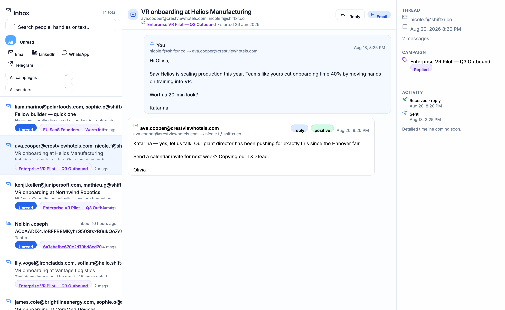
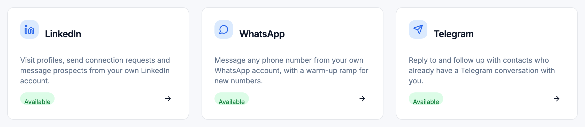

The 3-Day AI RevOps Workshop
The 3-Day AI RevOps WorkshopPlan Your Funnel, and Switch On the Machine That Runs It
Welcome to Day 1 of three. Today has two halves. First you switch on the tools and domains that need a head start. Then you make the 8 decisions your whole funnel is built from. Come back tomorrow and the same seat builds all of it.
- Your own AI is installed on the plan you already pay for, and Tantra RevOps OS is open with its setup check clean.
- Your business is described in numbers, your sending plan is set and your three tool choices are made.
- Your outreach domains are registered and the inbox partner is building your inboxes, so the warm-up clock has started.
- Tantra and every tool your build needs are connected, each key in .env and nowhere else.
- Your Day 0 prompts have run, and STATUS.md lists exactly what still waits on you.
Leave this up while people arrive. Say hello by name as the chat fills.
The one line to land: Day 0 exists so that Day 1 is only decisions. Everything slow (domains, inboxes, warm-up, sign-ups that need a review) starts tonight, because those are the waits nobody can shorten later.
The 3-Day AI RevOps WorkshopBuild Your AI RevOps Engine in 3 Days, Then Let Your AI Run It
This is where you land on Day 3: one prompt, and your own AI runs the week across all six stages. You decide and approve. It does the rest.
Open on the end state before anything else. Read the first and last lines aloud: one sentence in, one approval out. Everything in between is the agent working through your tools.
Say plainly that this is a preview of Day 3 for an example business, SendFlow, not a client result.
Ask for the first chat response now, inside the first minute: type 1 if you want this running for your business. Read a few names back.
The 3-Day AI RevOps WorkshopI Have Two Agendas, and I Want You to Know Both
Being open about the second one is the deal. I teach first. You decide later.
- I bring my best workThe whole system, built live in front of youAdi
- You bring your full attentionClose the other tabs while we are liveYou
- Cameras onI teach better when I can see the roomYou
- Chat openAnswers, questions and wins, as they happenYou
Say both agendas out loud, slowly. Agenda 1 is the reason they came. Agenda 2 is the invitation at the end of Day 3, and naming it now lowers guards: nobody spends three days waiting for the catch.
Then the agreement on the right. Ask for cameras on and wait a beat. Ask for DEAL in the chat and read some back.
The 3-Day AI RevOps WorkshopWho This Is For, and Who Should Not Stay
Let people pick themselves out by role. Read each column header, then the pain row only. The room should nod at one of them.
The right side is honest: it saves the wrong people three evenings. Then ask for F, O or A in chat, and use the mix to choose which examples you lean on tonight.
The 3-Day AI RevOps WorkshopHi, I'm Adithya. I Have Built Revenue Engines for a Decade.
Keep this under a minute. Three numbers, said once: a decade, 250 plus brands, 21 countries. Then move to how the days run, because that is what they care about.
The chat prompt is a warm-up: where are you joining from. Read a few cities back.
The 3-Day AI RevOps WorkshopWhere Is Your Revenue Engine Today?
- AReferrals and my network bring in every customer
- BWe do some outreach, but nothing runs without us
- CA funnel runs, but leads leak before sales sees them
- DIt works. I want an AI agent to run it every week
No wrong answer. Every starting point ends with the same engine on Day 3.
Launch the poll in the meeting tool and give it 30 seconds. Read the result back to the room: it tells you where to slow down.
If most say A or B, spend longer on the root problem next. If most say C or D, move faster to the engine.
The 3-Day AI RevOps WorkshopEvery Symptom You Feel Comes From One Hidden Leak
Marketing counts leads. Sales counts deals. Nobody owns the path between them, so that is exactly where your revenue leaks.
Read the five symptoms on the left one at a time and let the packets carry them into the middle. Then name the one problem: the leak between marketing and sales.
Tell the story from the playbook: marketing says it sent 400 leads, sales says they were junk, and the founder cannot tell who is right. Neither is lying; nobody owns the path between them.
Ask for a number in chat. The most common answer is the example you use for the rest of the night.
The 3-Day AI RevOps WorkshopIt Is Not Your Fault. The Old Way Leaks by Design.
Say the line on purpose: it is not your fault. What they tried failed because the method leaks, not because they did it badly. That removes the blame and makes room for a new approach.
Keep the new way high level here. The engine slide in a minute shows how it works. Ask for the 1 in chat: that is the false belief Day 1 breaks, that more SDRs, agencies or lists are the answer.
The 3-Day AI RevOps WorkshopAn AI Agent Can Run Your Revenue Engine, If You Build It in Order
Three doubts stop people believing that. Each day breaks one, and the biggest one breaks last, on Day 3. That is why you stay to the end.
This is the reason to stay. Read the doubt on each day, then what breaks it. Plant the open loop: the dashboard that finds the one number to fix arrives on Day 3, and it is the part people say changed how they run the week.
Tell them the tracker returns with ticks at the end of each day. Ask for a 3 in chat as a small commitment.
The 3-Day AI RevOps WorkshopThe Whole Engine You Will Have by Day 3, on One Screen
Six stages, first touch to a year of follow-up. Your AI runs each one through the tool's API, and stops for your approval.
This is the map for the whole series. Point left to right: you decide, your AI operates, six stages, and each stage is a handful of tools the AI drives through their APIs.
The stages are the playbook's FunnelOS: traffic, landing and registration, nurture, conversion, revenue and pipeline, and the 52-week engine that sends everyone who did not buy back to stage 1.
Ask how many tools they pay for today. Most rooms are already paying for half of this, unjoined.
The 3-Day AI RevOps WorkshopWhat Your AI Actually Builds Inside Every Stage
Every stage is the same four layers: the apps, the APIs that join them, the automations that fire on their own, and the workflows you can see. Four of the six stages, layer by layer:
Read down one column, Traffic: the apps, then what joins them, then what fires by itself, then what the attendee sees. That is the difference between owning tools and owning an engine.
Conversion and the 52-week engine follow the same four layers; they arrive on Day 2 and Day 3.
The 3-Day AI RevOps WorkshopFive Channels In, Three Funnel Shapes, One Pipeline Out
Any channel can feed any funnel shape. You pick the shape on Day 1. The channels and the pipeline stay the same, whichever you pick.
Fifteen lines on the left, three on the right. Every channel can feed every shape, and every shape lands in one pipeline, so the close rate of each is measured the same way.
Paid ads are dashed on purpose: optional, and never the first channel. Do not let anyone pick a shape tonight. Ask which they lean towards, and say Day 1 decides it from their buyer's belief.
The 3-Day AI RevOps WorkshopHow the Centre Works: One Card at a Time, in Order
Every card is one job: why it matters, what to do, when it is done. Open it now: revops-centre.growthcluborg.workers.dev
Decide · 10 min · Numbers beat adjectives.
Put the centre link in the chat now: https://revops-centre.growthcluborg.workers.dev
Walk the left side: one card, its why, its steps, its fields, then Mark done. On the right, the seven kinds. Stress the rule: a Connect card closes when the key is verified, an Approve card when the approval is given, a You do it card when the vendor step is confirmed. Nobody can tick their way through.
The last tile is the end of each day: the prompts, one per new session, in Tantra RevOps OS.
The 3-Day AI RevOps WorkshopFirst, Switch On the Machine
These cards connect your tools and start the slow clocks, like domain warm-up, that need a head start. Do them first. Then we make the decisions everything else is built from.
This is the setup half of Day 1. Frame it as plumbing: boring, one-time, and the reason everything later just works. The domains especially must start warming today because they need two to three weeks before they can send. Keep the energy up: tell them the fun part, the decisions, is right after this.
The 3-Day AI RevOps WorkshopEvery Day Runs the Same Four Beats: Watch, Fill, Get, Do
Learn the rhythm once and you never spend a live session on orientation again.
Each day starts from the one before, so a skipped evening is what puts people behind.
Point at the playhead stopping at Tonight: that is where the work happens, not in the session.
Ask everyone to write one question for the Day 1 Q&A now, specific to their business, so the answer is one they can act on that week.
The 3-Day AI RevOps WorkshopTwo Groups: One for Links, One Where Your Build Gets Reviewed
- Day 1: your offer sentence, funnel and event line
- Day 2: your registration page link and one outreach template
- Day 3: your dashboard and live page
- Never your prospect list: it holds other people's details
- Keep announcements unmuted: changed join links arrive there
Two groups, two jobs. Announcements carries links and changes, and nobody talks there. The cohort group is where you ask and post.
The offer sentence in the bubble is the playbook's SaaS example; the replies are illustrative. Ask people to ask in the group, not in private: the answer helps everyone stuck on the same step.
The 3-Day AI RevOps WorkshopBlock the Build Hours, Not Just the Three Sessions
Hours are the 3-Day Build Plan's own estimates.
The session is the smallest part of each day. Point at the bars: 13 to 17 hands-on hours on Day 2 alone.
Ask them to move clashing meetings now, while it costs nothing. One link adds all three sessions, each with its agenda and four reminders.
The 3-Day AI RevOps WorkshopTantra RevOps OS: The Folder That Makes Your AI an Operator
One folder. Its brief becomes your AI's instructions, each prompt runs one task, and a fence stops anything going out without your words.
Walk left to right. The folder is what your AI builds from: the brief, how everything is built, one guide per task, and your own decisions. Each end-of-day prompt goes into a new session, so every task starts clean from what is saved.
Then the fence: every tool call goes through scripts/api.mjs. It reads keys from .env so they never sit in a chat, and it refuses any call that sends, launches, buys or deletes unless the approval line in context/approvals.md holds your exact words.
The 3-Day AI RevOps WorkshopUse the AI You Already Pay For: Claude Code or Codex
Nothing new to buy: Claude Pro and Max include Claude Code; ChatGPT Plus and Pro include Codex. Pay for both? Pick the one you use most.
Two traps. The free Claude plan has no Claude Code. And nobody should pick chat because the terminal looks scary: both local agents run inside their desktop apps.
The 3-Day AI RevOps WorkshopInstall Once Tonight, So Day 2 Never Stops on a Missing Program
- Your assistant installedDesktop app, or one commandYou
- Signed in with your planNever an API key: that bills by the tokenYou
- Node 18 or newerRuns every tool call your AI makesYou
- Python 3.9 or newerRuns the Day 2 content kitYou
- Git for WindowsWindows only, for the kit's bash scriptWindows
The desktop apps are the easy way in: Claude's Code tab and the ChatGPT desktop app run the same agents. The terminal is shown here because it makes the checks visible.
The one mistake that costs money: saying yes when Claude Code offers an API key it found. An approved key bills the API by the token instead of the plan. Old guides also say Node 16: the folder needs 18 or newer.
The 3-Day AI RevOps WorkshopUnzip Your AI's Brain Into a Folder You Back Up
- 1Unzip into Documents/tantra-revops-os, not Downloads.
- 2Press Cmd + Shift + . to see the hidden dot files.
- 3Copy .env.example to .env in the same folder.
Point at the brief first: the file your AI reads before anything else. Then context/ and outputs/: empty tonight, your RevOps system's memory by Friday.
Windows users: turn on File name extensions under View, or .env.example looks like .env. And never rename the folders inside: every prompt names its files by path.
The 3-Day AI RevOps WorkshopOpen the Folder Itself, or Your AI Never Reads the Brief
Top row is the most common mistake: running claude or codex one folder up. It never sees the brief, and every answer starts from zero.
Bottom: start inside the folder, trust it, and the folder's settings switch on. In Claude Code that means its scripts run without asking and .env is blocked. In Codex, trust loads the config that lets it write inside the folder and reach the internet. Then type /status once to check it is on the plan.
The 3-Day AI RevOps WorkshopSkills, a Plugin and Connections: The Ones You Actually Need
The four skills: run-a-task, save-context, check-my-setup and content-batch. Each is a folder with one SKILL.md: a name, one line on when to use it, and the steps.
The Cloudflare plugin is two commands: /plugin marketplace add cloudflare/skills, then /plugin install cloudflare@cloudflare. Warn against adding every connection in the directory: each one asks for a sign-in and adds noise.
The 3-Day AI RevOps WorkshopOne Setup Prompt, Five Lines Back, and Proof It Read the Brief
- Node and PythonVersions new enough for the folderok
- Your plan loginNo API key in this shellok
- Keys in .envListed now, each card fills its ownlater
- Every tool's hostapi.usetantra.com, api.cloudflare.com and moreok
- ModeLive, with every send still waiting for youok
The doctor lines are what the real check prints on a clean setup. For every FAIL line, do the fix it names and paste the setup prompt again.
Then read the five lines aloud. Line 3 is the one that matters most. If anyone gets "I'll help you build your funnel", that is a fail: ask again.
The 3-Day AI RevOps WorkshopDescribe Your Business in Numbers, Not Adjectives
Read across one row, the best result: every one has a figure and a timeframe. That is the bar.
Then the bottom row: the brand name seeds the outreach domains, the main website is where they send visitors. Describe the buyers who pay you today, not the market you hope to reach: Day 1 narrows it further.
The 3-Day AI RevOps WorkshopWhy Your Cold Email Lands in the Inbox: Five Layers, Built Bottom Up
Every layer has a wait, which is why all five start tonight. Skip one and nothing above it works.
Build it bottom up with the animation. Domains first, separate from the main one. Then DNS: think of it as the postal check a receiving server runs: is this letter really from who it says? Exactly one SPF record per domain; two break authentication without any error.
Then inboxes, named after real people who answer replies. Then warm-up: like a new phone number, an inbox has to earn trust before it can call strangers, and nobody can shorten it. Only then do Tantra campaigns sit on top.
The next cards build this chain in order: sending plan, Cloudflare, the domains, the registry email, then the inbox partner.
The 3-Day AI RevOps WorkshopName the People, and Your Weekly Reach Works Itself Out
SendFlow names two people. Watch two names become two domains, four inboxes and a weekly reach nobody had to guess.
You never type a volume. The rules: at least two domains, two or three inboxes per domain, about 50 emails a day per warm inbox, 200 LinkedIn requests a week per person.
Name everyone now: an inbox added later starts its own 2 to 3 weeks of warm-up from zero. And never a team alias or an invented name: every interested reply needs a real person.
The 3-Day AI RevOps WorkshopThree Choices. Everything Else Is Built In for You.
Domains at Cloudflare, inboxes from our partner, outreach on Tantra, SMS on Twilio, booking on Cal.com and social on Metricool are the same for everyone. You pick three lines.
Three lines, the first option already picked. Read what each costs on the card and keep it if unsure.
The right side is not a choice: domains at Cloudflare, inboxes from the partner, outreach on Tantra, SMS on Twilio, booking on Cal.com, social on Metricool. The one mistake: two tools for one job. Reminders from two senders split your data and your unsubscribes.
The 3-Day AI RevOps WorkshopSee Every Sign-Up Now, and Start the Slow Ones Tonight
Your list is built from your own answers. Pick HubSpot and GoHighLevel drops off; tools that hang on your funnel wait under Decided later.
The list is built from each attendee's own answers, so it changes as they answer. Point at the Start column: four tools need a review, a top-up or a support switch, so they start tonight. WebinarGeek and Zoom only matter for the funnels that use them.
The mistake to warn about: signing up with a personal address. The next card picks the one address for every tool.
The 3-Day AI RevOps WorkshopOne Address Owns Every Tool, So No Reset Code Gets Lost
Packets out: one address signs up to every tool. Packets back: every login, invoice and security code comes home to the same inbox.
It is also the address that owns Google Analytics, so pick one you will still control in a year.
The 3-Day AI RevOps WorkshopGive Your Agent a Cloudflare Key That Can Buy Domains and Nothing More
- 1Open Cloudflare from the card: Zone, DNS, Workers Scripts and D1 arrive ticked at Edit.
- 2Add more twice: Registrar: Domains at Admin, then Single Redirect at Edit.
- 3Keep All zones, click Create Token, copy it once and paste it in the centre.
The cursor lands on the two rows people miss. Registrar: Domains only offers Read or Admin, and registering needs Admin. Single Redirect sends each outreach domain on to the main website.
Keep All zones, or domains bought tomorrow are out of reach. Keep a copy of the token in a password manager, never in a doc or a chat thread. The centre's walkthrough video shows every click.
The 3-Day AI RevOps WorkshopThree Clicks in Cloudflare, or Your First Domain Purchase Fails
- Add a payment methodManage Account, Billing: domains are charged to it at costYou
- Set your default registrant contactA real name, address, phone and email: ICANN requires itYou
- Accept the Domain Registration AgreementDomain Registration, Register Domains, onceYou
- Registrar answers a domain checkThe centre checks before the agent may buyAgent
This is the only part of the domain chain an agent cannot do, because it is billing and a legal agreement.
The shortlist uses .com names on purpose: some other extensions cannot be registered through Cloudflare's API. Domains register straight into the attendee's own account, so no nameserver change is needed.
The 3-Day AI RevOps WorkshopApprove Domains a Prospect Links to Your Brand at a Glance
- You approve 2 namesExactly these, for the total shownYou
- Registered at CloudflareRe-priced first if the list is over an hour oldAgent
- SPF, DMARC and a redirectBoth send visitors on to sendflow.ioAgent
- Nameservers settleUp to 24 hoursWait
This is the first time money moves, so it is an Approve card: the agent shows exact names and the total, and registers nothing else. Your approval words go into context/approvals.md, and the purchase is refused unless that line names each domain.
The playbook example: a SaaS company on northwind.io buys northwindhq.com and trynorthwind.com, two mailboxes on each, and starts warm-up the same day.
The 3-Day AI RevOps WorkshopOne Click in One Email Keeps Every Domain Alive
- Domains registeredThe agent confirms the purchase firstAgent
- Find the verification emailSent to your registrant contact; check spam tooYou
- Click its link onceCovers every domain bought with that contactYou
- Confirm in the centrePress I clicked the linkYou
Your new domains need a verified owner contact.
Verify it within 15 days, or the registry suspends the domains.
Verify my contactThe email on the right stands in for the real one; its wording varies. What matters: it goes to the registrant contact set two cards ago, which is why that has to be an inbox somebody reads.
One click covers every domain bought with the same contact. The card cannot see the registry, so confirm only after you clicked.
The 3-Day AI RevOps WorkshopYour Inboxes Arrive Built, but the Warm-Up Clock Still Runs
One click starts it. The partner builds Google Workspace inboxes on your approved domains, then Tantra warms them before any cold email goes out.
Partner timing varies. Warm-up takes 2 to 3 weeks once Tantra reaches every inbox.
Walk the four steps left to right. The only data shared is name, email, the approved domains and the inbox count.
The mistake to warn about: sending the partner the service account's email or key file. They need the numeric Client ID and the scopes, nothing else, and the Connect your inboxes in Tantra card shows both ready to copy. Keep two or three inboxes per domain so one flagged domain never takes all your capacity.
The 3-Day AI RevOps WorkshopFour Channels, One Inbox: Where Every Prospect Conversation Lives
Cold email, LinkedIn, WhatsApp and calendar invites all run from one Tantra workspace. Every reply lands in one inbox, every number in one report.

Point at the left column first: four senders, four very different setups. The next four cards connect each one. Then the big node: Tantra builds every campaign as a draft, and nothing sends until you tick its channel on the Day 3 launch card.
Now the screenshot. This is a real Tantra inbox. Email, LinkedIn and WhatsApp replies sit in one list, each tagged with its campaign, and a positive reply is marked as one. Ask the room in chat how many places they check for replies today. Most people type three or more.
The right column is why this matters on Day 3: the funnel hears about every RSVP and reply by webhook, so the dashboard counts them without anyone copying numbers.
The 3-Day AI RevOps WorkshopStart Your Tantra Trial Tonight and Hand the Agent One Key
This is where the trial starts. From here on, every campaign you build lands in your own workspace as a draft.
The full click path, about three minutes.
Say it plainly: this card starts your Tantra trial. The cohort is covered by a Pro trial, and from tonight every list and campaign you build lives in your own workspace. I come back to what happens after the trial on Day 3, not now.
Walk the cursor: Connectors, API Keys, Create API Key, name it, leave the expiry empty, copy. The key starts tk_live_ and Tantra shows it once. If someone closes the dialog first, they make a second key; tell them to revoke the first.
Ask the room to type T when their key is pasted. Wait for the first ten. The people who use the product tonight are the people who keep using it.
The 3-Day AI RevOps WorkshopConnect Every Inbox With One Google Sign-In, Not Twenty Logins
Delegation, upload, then Verify and Add Accounts.
Follow the packets. One sign-in on the left, the agent builds the Google Cloud project and the service account, and the key goes straight into Tantra. Nobody signs in to each inbox and nobody handles a key file.
The one step the agent cannot do is the partner's: they paste the numeric Client ID and the scopes under domain-wide delegation in the Workspace they built for you. Not the service account email, not a key file.
Then the badges. Connected means the account can act as that inbox. Gmail capable means it can also send. Ask: who has their partner's inboxes delivered already? Do this card the same day, because warm-up only starts once the inbox is connected.
The 3-Day AI RevOps WorkshopSign In to LinkedIn Once, Inside Tantra, and Keep Your Password Yours

- Open Channels in Tantra, connect LinkedInsign in and enter any code LinkedIn sendsYou
- First synca few minutes; checking early failsTantra
- Shows running: press Check my LinkedInYou
- LinkedIn campaign built as a draftAgent
Point at the LinkedIn card on the real Connectors page. Visit profiles, connection requests and messages, all from your own account.
This is the one login nobody can do for you: LinkedIn asks for a password and a code. You sign in inside Tantra, and the agent only reads whether the account shows running.
Two mistakes to name: checking while it still syncs, and connecting someone else's account without their say. Use the profile you actually sell from, because people look at it before they accept.
The 3-Day AI RevOps WorkshopStart the 60 Day Clock Today, Because Invites Are the Longest Wait
Three senders send three times what one can. Paid history raises Google's sending limits.
Let the playhead run to day 60. That is the longest wait in the whole build, which is why this card sits on Day 0 even if invites are weeks away.
Three rules: a new domain that is never your main one or a cold email one; Business Starter with a user per sender; and a $100 prepayment (100 euros if you are billed in euros), because paid history raises Google's limits.
The mistake to warn about: typing today's date instead of the day the account was really created. The agent plans your invite volume from that date. Ask: who already has a spare Workspace that is more than 60 days old?
The 3-Day AI RevOps WorkshopHow a Yes Becomes a Paid Deal With Nobody Dragging a Card
Two roads to the same record. Under about $1,000 the buyer pays from the page. At $1,000 or more they book a call first. Either way, an event moves the deal.
Start with the price on the left. The playbook's rule of thumb: about $1,000 or more goes through a call first; under that, a checkout link sells straight from the page.
Follow the top packet: the buyer pays, Dodo or Stripe calls the webhook on the server, and the deal moves to Payment Completed with the purchased tag. Nobody checks a dashboard. Then the bottom road: a booking creates the Eval Call Scheduled stage, a showed call moves it to Sales Call Held, and the payment closes it.
Ask the room to type their price. Call out a few and name their road. The next four cards set up exactly the pieces they need, and nothing else.
The 3-Day AI RevOps WorkshopPick How Buyers Pay Tonight, Because Verification Takes Days
This is a one-minute decision with a three-day consequence. Payment providers check your identity and business before they let you take real money, so the choice starts that clock tonight.
Read the Fits row. If your offer always needs a conversation, pick invoice and skip the whole checkout build. If buyers can pay from a page, pick Dodo or Stripe, whichever you already trust.
Ask for D, S or I in chat. Anyone who types D or S: start verification before you go to bed.
The 3-Day AI RevOps WorkshopBuild Your Checkout in Test Mode While Dodo Checks Your Business
- Start live verificationidentity, business, then bankYou, today
- Test mode, then Developer, API Keysadd a key, write access onYou
- Product, prices and checkout builtplus the webhook for paid ordersAgent
- Dodo reviews your account1 to 3 business daysDodo
- Swap to your live keythe Day 3 card checks itYou
Test mode first, then the key. Dodo shows it once.
Read the lights top to bottom. Two purple steps are yours tonight, the green one is the agent's, the amber one is Dodo's wait, and the last one is a Day 3 card.
The trap: creating the key before switching to Test mode. A test key works only on test, a live key only on live, and each mode has its own products.
Point at the timer. Nothing is charged in test mode, and even with a live key the agent will not charge real buyers without your explicit yes on the close card.
The 3-Day AI RevOps WorkshopGive Stripe's Agent Key Four Permissions and Nothing Else
Test mode first: the key starts rk_test_.
Follow the pins. Tag the key for an agent, then set Write on exactly four permissions: Products, Prices, Payment Links and Webhook Endpoints. Every other row stays at None. Stripe then asks for its two-step code before it shows the key.
Why so narrow: a restricted key can do the listed jobs and nothing else. If it leaks, nobody can refund, transfer or read your customers with it.
The mistake that costs the most: missing Webhook Endpoints. Without it a payment never reaches your pipeline, and nobody knows who bought. Build in the sandbox, prove a test purchase reaches the pipeline, then swap to the rk_live_ key on Day 3.
The 3-Day AI RevOps WorkshopConnect Your Real Calendar So a Booking Moves the Deal by Itself
Settings, Developer, API keys. Turn on Never expires.
Start on the left: the calendar you actually live in. If Cal.com cannot see it, it offers slots you are already busy in.
Then follow the packets. A booking moves the deal to Eval Call Scheduled. Marking the call showed moves it to Sales Call Held; marking it no-show fires the rebook follow-up. Nobody drags a card.
One warning: a Cal.com key has no scopes and opens the whole account. Keep this account for sales calls, not friends and family.
The 3-Day AI RevOps WorkshopYour CRM Is the Shared Memory Between Marketing and Sales
Marketing writes tags. Tags fire workflows. Workflows move the deal and hand your team the next task, so nobody asks who this lead is.
This is the root problem from the opening, drawn as a machine. Leads go cold in the gap between marketing and sales because nobody shares the same memory. The CRM closes the gap.
Left column: four moments marketing records as tags. Middle: one record per contact holds every tag and the pipeline stage. Right: each tag fires a workflow, and the workflow gives a named person the next job.
The table is the real list of nine GoHighLevel workflows you build on Day 2, by name. On HubSpot Professional the same tags become tasks. On HubSpot Free or Starter your funnel sends the messages and keeps the stage in a property. Ask the room to type the CRM they use today.
The 3-Day AI RevOps WorkshopBuild Your Funnel in a Sub-Account, Never in the Agency View
The layers build from the bottom. The plan first: Starter at $97 a month covers one business with up to three sub-accounts. Unlimited is for agencies.
Then the line people miss: GoHighLevel makes an agency account first. Contacts, pipelines and workflows never live there. Your funnel lives in one blank sub-account, with the time zone your sales calls run in, because every workflow wait and task due date uses it.
Already on GoHighLevel? Keep your plan and make one new sub-account. Leave phone numbers and email sending alone: your funnel sends the messages, GoHighLevel only alerts your team.
The 3-Day AI RevOps WorkshopKnow Your HubSpot Plan Before the Agent Builds One Property
Read the Workflows row first. Only Professional and Enterprise have them, and that is the only thing the plan changes for this build.
On Free, the agent keeps each contact's stage in a RevOps stage property, because there is only one deal pipeline and it is yours. On Starter it builds a second pipeline beside yours. On Professional the same, plus a task for your team on every funnel tag.
Two setup steps matter: the time zone in Account Defaults, and a user for everyone who takes calls, since every deal needs an owner. Ask the room to type their plan.
The 3-Day AI RevOps WorkshopGive GoHighLevel a Token That Can Build, but Never Delete or Send
Inside the sub-account, never at agency level.
Point at pin 2. Ten scopes, read and write on contacts, tags, custom fields and opportunities, read on the location and workflows. Opportunities covers pipelines: there is no separate pipeline scope.
Nothing in that list deletes data or sends a message. The agent adds tags and never removes them. If the token ever leaks, the damage is limited to what you ticked.
Set expectations for Day 2: GoHighLevel's API can read workflows but cannot create them, so you build the nine RevOps workflows by hand on a Day 2 card, and the agent reads them back to check every name.
The 3-Day AI RevOps WorkshopScope the HubSpot Key to Contacts and Deals, Nothing More
Add the eight scopes, create, then Show and Copy.
The eight scopes are read and write on four things: contact objects, deal objects, contact schemas and deal schemas. Nothing else.
Follow the packets: properties first, because they work on every plan. Then the plan decides the right column. If HubSpot refuses a second pipeline, the agent says so and keeps the stage in the RevOps stage property instead.
Heads-up: HubSpot is moving from legacy private apps to service keys this month. If your screen shows the key under a different menu than the card, follow your screen and the eight scopes; the key itself is what matters.
The 3-Day AI RevOps WorkshopTwo Tools Fill Your Feed, Three Make Sure People Show Up
Metricool and Kie.ai work before anyone registers. Resend, WhatsApp in Tantra and Twilio work after, each reminding people on the channel they ticked.
Left side, before anyone registers: Kie.ai makes an image for each approved post, and Metricool schedules the posts. Right side, after they register: three reminder channels, each gated by the box the registrant ticked.
Here's the thing: email alone is the weakest reminder. A phone channel is what gets a busy buyer into the room. Which phone channel depends on where your buyers are. Outside the US, WhatsApp usually wins; India needs WhatsApp, because SMS there requires a registration Twilio cannot do.
Ask the room: W or S. That answer decides which of the next cards matter most to you tonight.
The 3-Day AI RevOps WorkshopQueue Four Weeks of Approved Posts and Stop Posting by Hand
Token from Account settings, IDs from the address bar.
Three values, one place each. The token is under Account settings, API. The two IDs are the numbers after userId= and blogId= in the address bar when you open this brand's dashboard.
The schedule the agent uses: three posts a week, Monday, Wednesday and Friday at 09:30 in your time zone, up to 12 approved posts. That is four weeks of a channel that never quietly stops.
Two honest limits: the API needs the Advanced plan, and each network (LinkedIn, Facebook, Instagram, X) needs your own login inside Metricool. The agent never touches those logins. Posts are only the ones you approve on Day 2.
The 3-Day AI RevOps WorkshopGive Every Approved Post Its Own On-Brand Image for Cents
Buy credits, then create the key at kie.ai/api-key.
Walk the four steps. Nothing is made until you approve a post, so you only pay for images you will use. Each image costs a few cents from a balance you top up; there is no subscription.
Why no words in the images: your copy does the selling, and nothing gets misspelled inside a picture.
The mistake that makes every image look generic: leaving the brand colours blank on the brand card. Ask the room: who has filled the brand card yet? If not, it is the first Day 1 job.
The 3-Day AI RevOps WorkshopStart Twilio Tonight, Because a Human Reviews Your SMS Number
- Upgrade from trial, add $20 or morea trial only texts numbers you verifiedYou
- A Standard API key and your Account SIDSK and its secret (shown once), plus ACYou
- Number bought, verification filedUS and Canada toll-free; elsewhere a bundleAgent
- Twilio reviews ittoll-free: 3 to 5 business daysTwilio
- Texts only people who ticked SMSSTOP unsubscribes them everywhereAgent
Key type Standard. Copy the secret now.
Follow the lights. Two steps are yours tonight: upgrade and fund, then a Standard API key. Never paste the Auth Token or a Main key.
Then the wait nobody can shorten. In the US and Canada the agent buys a toll-free number and files a Toll-Free Verification; people at Twilio review it in 3 to 5 business days, and unverified toll-free traffic is blocked. Start tonight and it is done before you need it.
Point at the amber bar: if your registrants are in India, skip SMS and use WhatsApp in Tantra, which is the next card.
The 3-Day AI RevOps WorkshopScan One Code and Your Reminders Reach People on WhatsApp Too
One omnichannel campaign per reminder: email and WhatsApp.
The message on the left is the shape of what the agent drafts on Day 2: merge fields for the name and the watch link, a reminder at the right moment, and a way out. You approve the words then, not now.
Tonight is one scan: Tantra, Channels, connect WhatsApp, scan with your phone, wait for the sync. The card ticks only when the agent sees the account running.
The walkthrough on the right shows why this lives in Tantra: the same campaign that sends the email reminder sends its WhatsApp version, only to people who opted in. No second sender to register.
The 3-Day AI RevOps WorkshopSend Reminders From Your Own Domain With a Key That Can Only Send
Usually minutes. Resend can take up to 72 hours to see new records.
Full access and All domains, used once.
This is the key swap, drawn over time. You create one full-access key. The agent uses it once to add your main domain and write its records into your Cloudflare. When Resend verifies the domain, the agent creates a key that can only send from it and deletes the full one in Resend itself.
Why the main domain: confirmations and reminders go to people who asked for them, so they should come from the domain they registered on. Cold outreach stays on the separate outreach domains.
If DNS is not in Cloudflare, the agent lists the records for you to add. Expect minutes, allow up to 72 hours.
The 3-Day AI RevOps WorkshopWhere Every Number on Your Dashboard Comes From
Every link carries a UTM. Google Analytics counts visits and registrations, your CRM counts deals and payments, Tantra counts sends and replies. One dashboard reads all three.
- Every row is one UTM source
- A registration counts as the generate_lead key event
- Compare channels by booked calls, not clicks
Start on the left. Every link you send carries a UTM: the cold email, the LinkedIn message, the calendar invite, the post and the ad. That tag is how a registration remembers where it came from.
Then the three sources. Google Analytics counts the visit and the registration. Your CRM holds the stage and the payment, with the UTM copied into its fields. Tantra knows what was sent and who replied. The dashboard on Day 3 reads all three, one row per channel.
The table shows which source fills which column, no made-up numbers. Ask: can you name your best channel by booked calls today? Most rooms cannot. By Day 3 you will.
The 3-Day AI RevOps WorkshopLet the Agent Into Google Analytics Without Handing Over a Key
Account level, Editor, untick Notify new users.
No key on this card. You add the agent's service account as a user, at account level, as Editor. Removing that user later revokes access completely.
Why the TXT record: the service account is shared across attendees, so the agent proves the website's domain is yours before it links the property. If that domain is in the Cloudflare you connected, it writes the record itself.
No Google Analytics yet? Click Start measuring, name the account after your business, and leave the Property ID empty. The agent builds the stream and counts registrations and booked calls as key events.
The 3-Day AI RevOps WorkshopThree Funnels, One Question: How Can Your Buyers Be Reached?
You pick on Day 1, where each funnel gets its full map. Tonight, just notice which one sounds like your buyers.
Keep this short: the full maps are on Day 1. Read only the top row. Can you build a list of your buyers by name? Webinar. Do they find you through content? Reverse squeeze. Can they give you the same hour three days running? Challenge.
Point at the last row: whichever shape you pick, the deal lands in the same pipeline you just connected. Nothing you set up tonight is wasted on the wrong funnel.
Ask for W, R or C in chat. No wrong answers tonight; the next card asks you two questions that sharpen it.
The 3-Day AI RevOps WorkshopTwo Questions Tell You Which Funnel Your Buyers Can Reach
- AYesa challenge is on the table
- BNoa webinar or a reverse squeeze
- CNot sureask three buyers before Day 1
Two questions, and both are about your buyers, not you. The first row shows how specific a good answer is: named newsletters, named podcasts, a named forum. "Social media" is not an answer.
Then the poll: could they give you the same hour three days running? Yes keeps a challenge on the table. No points at a webinar or a reverse squeeze. Not sure is honest; ask three buyers this week.
Remind the room the numbers in the funnel walk-throughs are teaching models, not client results. Ask them to read the four foundations chapters before Day 1, so no term is new when we pick live.
The 3-Day AI RevOps WorkshopRead the Plan Written From Your Answers, and Find Your Weakest Link
- Your weakest link names the one stage to fix first, and why
- Check your branch: a page close puts the build on Days 1 and 3, a person close on Day 2
- Where it says unknown, bring the number to Day 1
- Do the Before Day 1 checklist: an evening's work
- Send the question you most want answered in the Day 1 Q&A
These are the eight real sections of the plan, in order. It is written from the answers you gave when you registered, and every stage is marked have, partial, missing or unknown.
Point at the weakest link: one stage, with the reason it comes before the others. That is where your limited hours go.
The plan never invents numbers. Where it says unknown, it means you have not measured it yet; bring the number, or bring the question. Ask everyone to send one question for the Day 1 Q&A tonight.
The 3-Day AI RevOps WorkshopRun One Prompt per Session and Day 0 Finishes Itself
Watch the session type itself out. Save today's context always runs first: it writes your answers into context/, so every later prompt starts from them instead of asking you again.
Then one prompt per new session, in order. When one asks for a key, a click or your approval, do it and reply done in that same session. Approve in your own words, one action at a time; "yes, do everything" approves nothing specific.
The last prompt checks your setup and lists what is still waiting on you, longest wait first. That list is your Day 0 homework. If you are in a Claude or ChatGPT project, add each file it hands you to the project before the next prompt.
The 3-Day AI RevOps WorkshopDay 0 Done: Your Tools Are Connected and the Slow Clocks Are Running
Everything slow started tonight: warm-up, payment checks, SMS review. Tomorrow is only decisions.
- Inbox warm-up runningevery inbox Connected and set to Cold2 to 3 weeks
- Payment checks submittedDodo or Stripe, or invoice picked1 to 3 days
- Calendar senders' clock startedthe real creation date entered60 days
- Your plan read, checklist doneand one question sent for the Q&A
- Your price and any rates you can proveDay 1 sizes your list from them
- Your buyer, named in one lineDay 1 starts with the offer sentence
Bring the roadmap back. Day 0 gets its tick: your tools are connected, and every slow clock in the build is already running. That is the hard, boring part, and you did it on the first night.
Read the right column as tomorrow's checklist. Three waits nobody can shorten, already started. Then three things to bring: your plan read, your price and any rate you can prove, and your buyer named in one line. Day 1 is only decisions, and nothing gets built from a blank field.
Ask everyone to post a screenshot of their connected tools in the cohort group tonight. Then type DONE in chat when the Day 0 prompts have run.
The 3-Day AI RevOps WorkshopNow, the 8 Decisions Everything Else Is Built From
Your tools are on and your domains are warming. The hard part is over. These eight answers become every page, email and invite the agent builds tomorrow, so a vague answer here is a vague funnel on Day 2.
The machine is on. Now the thinking. Tell the room: nothing gets built from a blank field, so spend your effort on the words.
Get the first chat response inside the first minute: ask everyone to type where they are joining from and what they sell, in one line.
The payoff line: leave tonight with these eight answers and Day 2 is a build day, not a thinking day.
The 3-Day AI RevOps WorkshopWhere Is Your Business Today? Your Answer Sets Every Example I Use
- APre-revenue, or still testing the offerI will lean on the webinar: the best first funnel while your message is new
- BUnder $10K a monthYour list size and price matter most today
- C$10K to $50K a monthYou have customers to build the persona from
- D$50K to $250K a monthYour bottleneck is usually the step between marketing and sales
- EOver $250K a monthYou will want the agent running the weekly loop on Day 3
No right answer. I use the spread to pick tonight's worked examples: the list sizes, the funnel picks and how much of the build to hand off.
Launch the poll the moment the divider is done. Read the question once, then stay quiet for twenty seconds while the votes come in.
Read the result out loud and say what it changes: if most of the room is A or B, I lean on the webinar examples and small list sizes; if most are D or E, I spend longer on the CRM pipeline and the hand-off between marketing and sales.
For anyone watching the replay: type your letter in the chat anyway. It tells you which examples on the cards are closest to your business.
The 3-Day AI RevOps WorkshopOne Answer Tonight Becomes 40 Assets Tomorrow
Follow a single decision through the build. Your offer sentence alone lands on the page, in every reminder, in the cold email and on the close.
Point at the middle node. Everything on the right is generated from the brief. That is why the Day 1 cards ask for specifics: a named buyer, a number in the outcome, a real date.
Ask the room in chat: which of the five decisions on the left are you least sure about? Use the answers to pace the next hour.
The 3-Day AI RevOps WorkshopFill Each Card While the Reasoning Is Still Fresh
Day 1 is a chain. Each card reads the answer before it, so fill them in the order the session teaches them.
Walk the playhead with your hand: offer first, then method and value, then the buyer, the list, the funnel and the date. Each one is read by the next.
Say it plainly: open the centre in a second window now and fill as I teach. A card filled three days later loses the reasoning, and the offer, persona and event title stop matching.
The 3-Day AI RevOps WorkshopStart the Clocks First, Then Block the Hours
- Read today's list oncetop to bottom, before you touch a tool
- Start anything with a clock on itorder your list, ask WebinarGeek support to switch the API on
- Block the hours in your calendarwhole hours, not the gaps between meetings
- Name one deliverable"list approved" beats "work on the list"
Point at the amber step. A data partner quote and a vendor switching on an API both take time you cannot speed up, so they start first.
Ask the room to open their calendar now, while I am talking, and block the hours. Then type the block in the chat: the day and the start time.
The 3-Day AI RevOps WorkshopWrite an Offer a Stranger Can Repeat Back in One Breath
Six slots join into one sentence. Here is the same card filled in by three very different businesses.
Read one row across all three businesses, the After row. Every one is a number. Then the Mechanism row: a named method, never a tool name.
Test live: ask one attendee to paste their sentence in chat, then ask someone else to repeat it back. If they ask a follow-up question, it needs another pass.
The 3-Day AI RevOps WorkshopName Your Method So Buyers Stop Comparing You on Price
Top: The Demo Engine's four steps, each with a because. Below: the same card filled in by four businesses. A teaching model, not a client result.
Read the steps left to right, and stress the word because each time. That word answers the buyer's why bother before they ask it.
Then point at the red step. Every method needs one line on why the obvious alternative fails: an agency, a tool alone, or doing nothing.
Proof rule, said once: every result needs a number, a name and a date. No results yet? Borrowed proof is fine when it is labelled as borrowed. Never invent one.
The 3-Day AI RevOps WorkshopWrite Your Brand Rules Once, So No Draft Ever Guesses Them
- One version of each fact: one title, one price, one call to action
- Colours as hex codes, never "navy"
- Every [check] answered by you, not guessed
- Cold outreach branded or anonymous: decided now
This is the sheet the agent drafts from what you attach. Walk down it row by row and point at the Logo row: cold emails and invites stay unbranded, signed by a person. That one choice decides how the cold landing page is built.
Point at the Claims row. Decide now who approves numbers and which customers may be named. Teams that skip it spend weeks fixing claims after the pages are live.
The 3-Day AI RevOps WorkshopRaise the Top, Shrink the Bottom: Why Some Offers Sell Themselves
Alex Hormozi's value equation: dream outcome times perceived likelihood, divided by time delay times effort. Each change you make moves one lever.
Start on the right: value is what the buyer weighs. Then work left. Two levers sit on top and multiply; two sit underneath and divide. Shrinking the bottom raises everything above it.
Point at the purple group, then the red one. Most people try to fix a weak offer with a bigger promise and more testimonials. The defensible move is a win inside week one and one step you do for the buyer.
Credit it out loud: this is Alex Hormozi's value equation from $100M Offers. The next card scores your own offer on it.
The 3-Day AI RevOps WorkshopScore Your Offer Out of 10, Then Fix the Two Weakest Levers
Three businesses score the same four levers. The two lowest get fixed before a single word of copy is written.
Read down one column, the consultancy. Time delay is a 4 and effort a 5, so those two get fixed first. Then read across: every business has a different weakest pair, which is why you score your own.
Warn the room about the commonest miss: writing the changes and never updating the offer card. Day 2 then builds the old offer.
The 3-Day AI RevOps WorkshopNarrow Until It Feels Small, Then Write in Their Exact Words
Build the stack from the bottom with the animation: the whole market, then what your worst customers share, then the floor, then the narrowest segment that will actually respond, then the ceiling client at the top. The ceiling and floor rows are an illustration for the software example.
The ceiling client is the one who gets the best result and is easiest to serve: the page speaks to them. The floor is the smallest buyer you still accept. Below the floor is your exclusion list.
Then point right: these are the buyer's own words, straight from the card examples. A paraphrased objection is useless. The exact sentence is what your page and your session must answer.
The 3-Day AI RevOps WorkshopTurn Your 20 Best Customers Into Filters, Copy and Timing
Follow the packets. Fields 1 to 4 plus the role become the filters the agent types into your data tool. The role and fields 6 to 9 become the person your copy speaks to. The trigger decides who you reach first.
The mistake to name: describing the customer you want instead of the ones you have. Start from the sheet of your 20 best customers. No customers yet? Use your 10 best sales conversations and mark every value assumed.
The 3-Day AI RevOps WorkshopEvery Funnel Is One Multiplication: Fix the Smallest Rate First
Every rate is one count divided by another, and the rates multiply. Change one stage's metric and you have a different funnel; the channels and the close stay the same.
Read one row out loud, the webinar: page visits times registration rate, plus the people who registered without the form, times show-up rate, times booking rate, times close rate, equals onboarded customers. The playbook's equations section has the full channel-by-channel version.
Then point at the fan on the left: the same five channels feed all three shapes. Only the middle changes. The squeeze page swaps show-up for half-watch; the workshop swaps it for people who attend a day and a half or more.
This is what the next card runs backwards: from your revenue target to the number of people to invite. A blank rate reads unknown, will measure. Never borrow one.
The 3-Day AI RevOps WorkshopWork Backwards From Revenue to the Exact Number of People to Invite
Target divided by price gives buyers. Each rate you can evidence turns buyers into the people you must invite.
A teaching model, not a client result. Your own evidenced rates replace every number.
Walk the arithmetic from the right: 24,000 over 3,000 is 8 buyers. Then up the funnel. Make the point that every rate on the left is a placeholder the attendee replaces.
If someone's number comes out at 200,000 invites, celebrate it: the card just saved them a month of building the wrong funnel.
The 3-Day AI RevOps WorkshopWhere Your List Comes From, and What a Clean One Leaves Out
Four places rows come from, one cleaning pass by the agent, and 25 rows you read yourself before it fills the rest.
Left to right. Rows come from one of four places: our data partners, who pull and verify them for you; ZoomInfo or Clay on your own account; or your own CRM. Whatever the source, it arrives as one CSV with the same columns.
Then the cleaning pass: duplicates, your own customers, your exclusions and left-out countries, bad emails, and anyone who should never be contacted. The list arrives verified by the vendor, so nobody pays for a separate verifier.
Last column: the agent stops after 25 rows and waits for you. That pause is the most valuable minute of the day.
The 3-Day AI RevOps WorkshopPick the Database That Actually Holds Your Buyer's Work Email
Read the Best when row across. Titles and company size suit ZoomInfo or our data partners; a recent trigger like a funding round suits Clay; an existing customer list needs no new account at all.
Two checks before anything sends: the outreach rules in each buyer country, and your customers' email domains on the card, so no client ever gets a cold invite. When a country's rules are unclear, leave it out of this first list.
The 3-Day AI RevOps WorkshopGet a Verified List Without Opening a Database Account
- Pick the databaseZoomInfo, Clay, or whichever fits your filters bestYou
- 500 rows, filtered from your personaHead of Sales and VP Sales; software; 11 to 50 staff; United StatesYou
- Mark done: the request goes outyour name, your email and these three answers, nothing elseYou
- The partner team quotes the pricenothing is bought until you agreePartner team
- The rows arrive as a CSV by emailupload it on Approve your prospect listYou
Platform: ZoomInfo
Rows: 500
Filters: Head of Sales and VP Sales; software; 11 to 50 staff; United States
Please quote before anything is bought.
This card only appears if you picked our data partners. Walk the lights: three purple steps are yours and take three minutes. The amber one is the partner team quoting you, and nothing is bought before you say yes.
Point at the filters line: it is the software example, copied word for word from the persona card. That is the whole trick.
The 3-Day AI RevOps WorkshopRead 25 Rows Before One Bad Filter Fills the Whole List
Sample rows for the software example. Two of them should stop you before you approve.
- Would you invite this person? Read all 25
- Wrong titles point at field 5; wrong companies at fields 1 to 4
- Add a missed exclusion or customer domain before approving
- Approve, and the agent fills the rest inside the credit budget
Read two rows out loud. Ben is a marketing manager: the role filter is loose, so fix field 5 on the persona card. Leo works at Brightdesk, a customer: its domain was missing from the list card.
The point is not these two rows. It is the filter behind them: approve with a loose filter and it fills the whole list with the same mistake, spending credits on people who will never buy.
The 3-Day AI RevOps WorkshopThe Webinar Funnel: How 342K Cold Reach Becomes 14 Paid Clients
The playbook's webinar map, all six stages, with the funnel math between them. A teaching model, not a client result.
Walk it left to right with the packets. Five channels reach 342K people and send 8.6K to one page. 9.6% register: 825 people. Four nurture lanes get 48.6% of them into the live room. The room books 18 calls live and 38 more from the replay and follow-up: 56 calls. A quarter close.
Then the loop: everyone who did not buy stays in a 52-week cadence, and every week can bring them back to Stage 1 for the next session.
Say it twice: these are the playbook's teaching model, not a client result. The shape is what you copy; your own numbers replace every figure.
The 3-Day AI RevOps WorkshopThe Reverse Squeeze: Let the Video Sell Before You Ask for Anything
Five stages. The VSL page is the session: Part 1 plays with no form, and the opt-in appears only once the value lands. A teaching model, not a client result.
Same five channels, but they all point at one page that plays Part 1 with no form. 10,000 cold contacts send 2,000 visits. A quarter of the visitors opt in for Part 2 once the value lands: 500 people.
The nurture is not timed to a clock. It is triggered by how far each person watched: 175 get past the threshold on Part 2. Then the close chain: 70 engage, 14 book, about 4 win at $25,000.
The dashed cards are a later layer: paid ads and AI voice calls are added once the organic version works. Teaching model, not a client result. And the rule from the funnel card: this shape needs proven messaging and case studies first.
The 3-Day AI RevOps WorkshopThe Workshop Series: Three Live Days That Sell by Building
You are inside this funnel right now. Every figure is a build fact, not a conversion claim: the cohort numbers are still being measured.
This one is personal: it is the funnel you are in. Team posts, member referral links and the WhatsApp community bring people to two pages: a free seat and a paid seat, priced in 8 local currencies. Every registration answers an intake, and Claude Code writes a personal course plan from it.
Then three live days, at the same hour, where you build as you watch and leave each day with an output. The offer comes on Day 3, after you have seen the result yourself. Graduates and their referral links fill the next cohort: that is the loop.
Dashed cards are planned, not live. No conversion numbers on this map, on purpose: the first cohorts are still being measured, and I will not show you a number I cannot back.
The 3-Day AI RevOps WorkshopPick the Funnel Your Buyers' Belief Calls For, Not the One You Like
Hours are our estimates from the playbook, say so. Run a poll here: which funnel are you leaning towards? Then ask anyone who picked the reverse squeeze to name their two case studies in chat. If they cannot, steer them to the webinar.
Last step on the card: book the build hours in your calendar before you mark it done. Switching shape on Day 2 throws away the event card and guides set for this one.
The 3-Day AI RevOps WorkshopWrite One Event Line Every Invite, Reminder and Page Repeats
- The four steps of The Demo Engine
- Why ads alone leave the calendar empty
- How to run it from one list, every week
- Outcome first, method name second, no wordplay
- Set in your audience's time zone, not yours
- A date your warm-up and invites can meet
- A replay expiry you will actually keep
This is the event line on the registration page, and the same line goes into every invite and reminder. Read the title aloud and ask: would a head of sales give up an hour for that? Outcome first, the method name second.
Time zone trap: set the hour in your buyers' zone. Across zones, pick the hour most of them are at work.
Your outreach domains started 2 to 3 weeks of warm-up when you approved them on Day 0. Until that ends, cold email waits, so a near date leans on LinkedIn, calendar invites and your own lists. Further out is safer.
The 3-Day AI RevOps WorkshopPick a Live Day Your Video Can Actually Be Ready For
Only for the reverse squeeze. The live day is a release date: every invite and page points at it, so the video must exist before it.
Walk the last two steps slowly: the page plays Part 1 with no form, and the bridge to Part 2 appears only past the threshold. A title that sounds like a pitch kills that, because these buyers have never heard of you.
The 3-Day AI RevOps WorkshopPick a Start Hour You Can Hold Every Day, Not Just Day One
This workshop is the example: three 60-minute sessions, 45 minutes of teaching and 15 of questions, at the same hour each day. Registration closes the evening before day one, so leave enough days between the first invite and that deadline.
The mistake: an hour that suits day one and clashes on day three. Check all three days in your calendar before you set it.
The 3-Day AI RevOps WorkshopBuild the Pipeline Once, and Let Every Event Move the Deal
One Sales pipeline serves all three funnel shapes: only the step in front of Form Filled changes. Each stage has an entry event, so nobody drags a card by hand.
Start on the left: whichever shape you picked, the contact lands on Form Filled. From there every column has an entry event. A booking creates Eval Call Scheduled. The appointment marked no-show moves it to No Show, and a rebook sends it back. Marked showed is Sales Call Held. The payment webhook sets Payment Completed.
The two red stages are the exits. Give them a colour so they stand out on the board. Behind them sit the four extra pipelines: No-Show Recovery, Nurture-Back, Referral and Expansion, and Re-Engagement.
The names are fixed. Every automation, report and sync matches on the exact text, which is why nobody renames a stage to suit the team.
The 3-Day AI RevOps WorkshopApprove Once, and Your CRM Gets Every Stage, Tag and Field
- The Sales pipelineForm Filled to Delivery, with the No Show and Unqualified exitsAgent
- Four extra pipelinesNo-Show Recovery, Nurture-Back, Referral and Expansion, Re-EngagementAgent
- 15 tags, before any contact carries one5 funnel tags (registrant, attended, not watched, replay, purchased) and 10 sales tagsAgent
- Every contact and deal fieldincluding the webinar date, time and watch link your reminders useAgent
- The RevOps stage fielda dropdown in HubSpot, a picklist on your Zoho LeadsAgent
- From Day 2: every event copied inregistrations, tags, bookings and payments, as they happenYour funnel
One click from you, about five minutes from the agent. Walk the green lights: the pipeline, the extra pipelines, every tag your funnel will ever send, the fields, and the stage field a rep changes.
Why the tags first: a CRM automation can only trigger on a tag that already exists. Creating them now means nothing is missing the first time a contact carries one.
The test, said once: register on your own page, book a call, then make a test payment, all with one email. The deal walks from Form Filled to Payment Completed and nobody moved it.
The 3-Day AI RevOps WorkshopConnect WebinarGeek in Three Clicks, and Dodge the ID Trap
- 1Account, Integrations, API: copy the key.
- 2Copy the webinar ID from the API reference icon next to Edit webinar. The address bar number is the episode ID.
- 3Paste both on the card. The agent schedules your broadcast on Day 2.
Show the trap slowly: two numbers that look alike. The cursor lands on the API reference icon first, then the key.
Remind the room the trial API is off until support switches it on. Ask them to message support now so it is on by Day 2.
One more timing fact: attendance arrives one to two hours after the session, so the no-show tag lands about three hours after the end. That is when the no-show follow-up starts.
The 3-Day AI RevOps WorkshopSet Zoom's Account Switches First, or Registrants Get Refused
Build it from the bottom up, the way the animation does. Plan first, then the account switches, then the app, then the three values. The replay hook waits for Day 2, because your funnel's webhook address does not exist yet.
Point at the amber layer. This is where we got burned on our own account: a locked setting made Zoom refuse every registrant without a Zoom account. Greyed-out switch? It is locked for the whole account at zoom.us/account/setting.
Two things no API can do on a standard account: stop people unmuting and assign co-hosts in advance. Two clicks in the Security menu at the start of each session, unless Zoom Support switches the locks on for you.
The 3-Day AI RevOps WorkshopSend Every Participant a Personal Output Within a Minute
Shown once. Copy it before you close this window.
- 1Settings, Billing: add a small prepaid balance.
- 2Settings, API keys, Create key.
- 3Name it after your challenge and click Add.
- 4Copy the key now and paste it on the card. The agent tests it.
Only for the challenge. Your survey asks each participant what they did and where they got stuck; Claude turns those answers into that day's output, the moment they submit.
The trap: thinking a Claude or ChatGPT subscription covers this. Your funnel runs on its own at any hour, so it needs a Console API key with a prepaid balance. $10 goes a long way.
Anthropic shows the key once. Copy it before you close the window.
The 3-Day AI RevOps WorkshopLet Watch Depth Decide Who Sees the Part 2 Opt-In
Watch the playhead: it is a viewer watching Part 1. Nothing is asked at the start. The Wistia player marks 25, 50, 75 and 100 percent, and past the threshold, 75 percent unless you change it, the Part 2 opt-in appears and carries how far they watched.
Token rule: only the Account Owner sees Settings, API Home. Give the token Read, update and delete anything, plus Upload video. Copy it at creation: Wistia does not show it again.
The 3-Day AI RevOps WorkshopFind the Broken Key Tonight, Not Halfway Through a Day 2 Build
A sample check for a webinar build. Red never means stuck: it names the vendor's reason and the fix.
Run it last, after every connect card, so it tests the full set. This is sample data for a webinar build.
Point at the red tile. It does not just say failed: it says why and where the fix lives. Here, the WebinarGeek trial has its API off until support switches it on.
Run it again after you change any key or plan. A key revoked in a vendor dashboard fails the next build, not the moment you revoke it.
The 3-Day AI RevOps WorkshopAsk Five Customers One Question Before Anyone Writes a Page
- Send the five-customer questioncustomers, not prospects: they already boughtTonight
- Five sent, not five draftedone person at a time, asked exactly as writtenTonight
- Make one proof folderscreenshots, numbers, testimonials, logos, linksTonight
- Name each file after an objection"we-tried-outbound-it-burned-our-domain.png"Tonight
- Paste the folder link on the cardDay 2's pages pull from itBefore Day 2
Hi Sam,
What number are you personally judged on this quarter, and what's in the way?
One line back is perfect.
Maya
Read the question in the email out loud. It surfaces the number your buyer is judged on and what blocks it. That is headline material for Day 2.
Skip it only if your persona already comes from real conversations. Otherwise: five sent, tonight. A question sitting in drafts teaches you nothing by tomorrow.
Then the folder. Name each file after the objection it answers, so whoever writes the page finds the right proof in seconds.
The 3-Day AI RevOps WorkshopName What You Finish Tonight, Then Post It Where Your Cohort Sees It
- A deliverable, not an activity
- The hours blocked in your calendar
- Offer, funnel and event line posted
- Your prospect list left out: it holds other people's details
Show the post. Three things and a plan: the offer sentence, the funnel and its reason, the event line, and what gets finished before Day 2 with the hours.
Why post it: a named task with blocked hours gets done; a good intention competes with everything else tomorrow. Small finished actions make the big ones easy.
One hard rule: never post the prospect list. It holds other people's contact details.
The 3-Day AI RevOps WorkshopTurn Today's Answers Into a Strategy Document, One Session per Prompt
Open the same project you set up on Day 0, never a new one. Prompt 1 saves today's answers into context/, and when a Day 1 answer contradicts an earlier one, today's wins.
Then one prompt, one new session, in order. Everything carries over through context/ and STATUS.md. When a prompt asks for something, do it and reply done in that same session.
The last prompt writes your strategy document. It marks every assumption [check] and ends with the questions to answer before Day 2.
The 3-Day AI RevOps WorkshopTwo Days Down: Everything Tomorrow Builds Now Has an Answer
Bring the roadmap back. Two ticks: Day 0 and Day 1. Everything Day 2 builds now has an answer to read from.
Name tomorrow's promise: you will finish Day 2 with visible, working assets, built the same evening. The thing most people believe they cannot do.
Ask the room to type 1 or 2. Anyone typing 2: the cards stay open tonight, and the next slide shows the two ways to keep going.
The 3-Day AI RevOps WorkshopKeep Building Tonight, or Have It Built With You
- 1Scan the code or open usetantra.com/enterprise
- 2Pick a time for a fit call
- 3Bring tonight's strategy document
Keep this soft. Two paths, both good. Most of the room keeps building tonight in the centre, and that is exactly what the cards are for: https://revops-centre.growthcluborg.workers.dev
If you would rather have it built with you, book a fit call. It is a fit call, not a sales pitch: we look at your strategy document and say honestly whether working together makes sense.
No price tonight. Leave the code on screen through the Q&A and keep answering while questions keep coming.
The 3-Day AI RevOps WorkshopYour Domains Warm Overnight. Tomorrow You Build the Whole Funnel.
Day 1 is the only day that is mostly thinking. From tomorrow it is all building, and it only works if you are in the same seat.
This is the single most important retention beat in the series. Most drop-off happens between Day 1 and Day 2.
Make the stakes concrete: the domains you started today need you back tomorrow to build the pages they point at.
Name Tantra once more and ask them to type DAY2 as a public commitment.
The 3-Day AI RevOps WorkshopBuild Every Piece of Your Funnel, One Finished Asset per Card
Yesterday you decided. Today the agent drafts from every answer and you approve. By the end of Day 2 you can open, click and test the funnel you thought was too technical to build.
- Your registration page live in your own Cloudflare, with a test sign-up in your CRM
- Every reminder and follow-up approved and timed from your event date
- Your webinar deck online at /deck, with four polls and your call to action
- Your run of show signed off and the room set up: polls, offer link, recording
- Your domains warming and your SMS sender in review, so the slow clocks are running
- Outreach, ads and content drafted, with traffic switched on last
Open with yesterday's win: every decision is in the brief. Then name the fear out loud: most people in this room believe the build is the part they cannot do. Today breaks that belief one card at a time.
The rule for today: every card ends with something you can click. A page, a message on your phone, a deck, a room. If a card ends without a finished thing, tell us in the chat and we fix it live.
Ask for the first chat response now: type 2 if you finished all your Day 1 cards.
The 3-Day AI RevOps WorkshopThis Is the Day Most People Skip. It Is Also the Day It Gets Real.
You made it back. Yesterday was decisions. Today the funnel actually gets built, and the people who show up today are the ones who finish with a running engine.
Welcome the returners warmly and by name where you can. Acknowledge the drop-off openly: the room is smaller, and that is normal, and the people here are the ones who will finish.
Reconnect yesterday to today in one breath: the eight answers become today's build. Then set the expectation that today needs real hours.
First chat response inside the first minute: type 1 if you are back.
The 3-Day AI RevOps WorkshopEvery Card Today Ends With Something You Can Click
This is your whole funnel and the card that builds each piece. No card ends with homework: each one ends with a page, a message or a room that works.
Walk the map left to right. The amber column is anything with an outside clock: warm-up and Twilio's review cannot be rushed, so they start first even though they feel like admin.
Then point at the dashed box in the bottom right. Outreach, ads and content are drafted today, but they only switch on once a test contact has passed through every box to their left.
Read the chat answers aloud. Whatever card most people name, promise you will slow down on it today. That is how the room learns it can build this.
The 3-Day AI RevOps WorkshopStart the Slow Clocks First, Switch Traffic On Last
This session follows the funnel in the same order as the cards: traffic clocks, the page, nurture, the live delivery, the close and follow-up. Point at step 5: it is last on purpose.
The most common mistake on Day 2 is starting with outreach copy because it feels productive, then launching before the pages work. Name it so nobody does it.
Ask: who here has ever sent traffic to a page that was not finished? Type 1. Most rooms are full of ones.
The 3-Day AI RevOps WorkshopBlock the Hours, Then Start the Cards That Wait on Someone Else
The clocks you cannot shorten start first. Your 13 to 17 hands-on hours fill the wait.
Point at the two top lanes. Warm-up takes 2 to 3 weeks and Twilio's toll-free review takes 3 to 5 business days. Neither moves faster because you are busy, so both start in the first hour.
Then the purple lane: your own hours. Day 2 is the heaviest day of the three. Ask everyone to open their calendar now and block whole hours, not the gaps between meetings.
Ask the room: type the number of hours you have already blocked for Day 2.
The 3-Day AI RevOps WorkshopWhile You Build, Your Domains Are Earning Gmail's Trust
Two things run on your outreach domains this week: every receiving server checks the mail is really yours, and every new mailbox builds its own sending reputation.
Use the postal metaphor. SPF is the return address: is this server allowed to post for you? DKIM is the wax seal: nobody opened the envelope. DMARC is the note to the post office: what to do if either check fails. MX means there is a letterbox for the reply.
Then the right side. A new mailbox is like a new phone number: nobody picks up until it has a history. That is why each one sends 20 a day for 2 to 3 weeks before it goes to 50.
Work the example out loud: ten warm mailboxes, 50 a day, 8 working days, 4,000 sends. A five-step thread uses up to five sends per person, so about 800 people. If your list is bigger, add mailboxes or start earlier.
The 3-Day AI RevOps WorkshopFour Green Checks per Domain Before One Cold Email Goes Out
- trysendflow.com: SPF, DKIM, DMARC, MXOne SPF record, a DKIM key found, DMARC setPass
- sendflowhq.com: two SPF recordsMerge them into one at your DNS host, then check againFix
- Warm-up: 10 of 10 mailboxes at 20 a dayLeave it on for 2 to 3 weeks, and after launch tooWarming
- Prospect list cleanedDeduped, every email well formed and on the company domainPass
- Card marks itself doneThe moment every row is greenAgent
This card is a watch card: the agent does the reading, you only fix red rows. Point at the second row. Two SPF records is the classic silent failure: no error anywhere, mail just goes to spam.
The fix is always to edit the first record, never to add a second. Steps 3 to 6 of the Cold Email guide have the exact values.
Ask: type RED if any of your rows came back red, and we will look at one live.
The 3-Day AI RevOps WorkshopPick the Channels That Match How Warm Your Buyers Already Are
Tantra omni-channel runs calendar invite, email, LinkedIn and WhatsApp as one sequence, so each person hears from you once per touch. Or pick single channels.
Read the Needs first row across. Every channel has an entry fee. Cold email's is warm domains, ads' is a page that has already converted a registration on cheaper traffic.
The mistake to name: picking all six channels for a first run. It spreads your sending capacity thin and gives you six weak signals instead of two strong ones.
The bottom row matters most for Day 3. Without a tagged link per channel you cannot tell which one produced the buyers.
The 3-Day AI RevOps WorkshopWhat Happens the Moment Someone Says Yes to Your Page
One engine, two doors. A webinar or challenge asks on the page; a reverse squeeze asks only after Part 1 has earned it.
Trace one person through. They click a link that carries its channel's tag, register, and four things happen without anyone pressing a button: the thank-you page, the confirmation with a calendar file, a tagged contact in your CRM, and the reminder countdown.
Point at the calendar. A calendar entry is a small commitment, and the calendar app adds its own reminder on top of yours.
Then the violet path. The reverse squeeze never asks up front: Part 1 plays first, the bridge appears late, and Part 2 carries the application that sorts buyers into bands.
Ask only for fields you will use. Every extra field costs completions, which is why the chat question is about your form.
The 3-Day AI RevOps WorkshopApprove a Page Where Every Block Answers an Objection or Earns the Click
- List: only titles that can say yes alone
- Invite: email and LinkedIn, same week
- Remind: the day before and the hour before
- Follow up: offer and booking link within a day
- Headline B tests the objection: Tried Outbound and Burned Your Domain?
- Proof points are numbers with dates, your own only
- The form sits above the fold on a 1366 by 768 laptop
- No menu, no links off the page
- Thank-you page: calendar, your group, one next step
This is the SaaS example straight from the card. Read headline A, then the check about headline B. One sells the outcome, the other names the objection your buyer already has. That is your first A/B test.
Point at the bullets: the method's steps, one per line, no heading. The agent refuses to publish while any answer still holds a [check] note or a placeholder.
After approval, register once from your phone. The micro-win tonight: your own sign-up sitting in your own CRM, tagged with its source. Ask everyone to type DONE when theirs lands.
The 3-Day AI RevOps WorkshopTurn Your Network Into Free Seats With One LinkedIn Event
- 1Me, Events, Create event. Choose Online and External event link.
- 2Paste each prefilled field. The link is your registration page, tagged.
- 3Add your banner image and click Post, then share it once from your profile.
- 4Invite first-degree connections who match your persona, best fits first.
LinkedIn has no API for events, so this is one of the few cards that is pure pastes. Fifteen minutes.
The trap is LinkedIn's own registration. If people register on LinkedIn, they never reach your reminders or your CRM. The cursor lands on External event link for exactly that reason.
Ask: type the number of first-degree connections you have who match your persona. That number is your free reach this week.
The 3-Day AI RevOps WorkshopValue First, Then the Ask: How Watch Depth Routes Every Viewer
There is no live room and no session clock. Part 1 earns the opt-in, the depth each person watched picks their follow-up, and the application decides the next door.
This is the conversion room for the reverse squeeze. Nobody shows up at a time; the video does the teaching, and the player reports depth at 25, 50, 75 and 100 percent onto each contact.
Follow the amber path: someone who stopped at 40 percent gets one email that sends them back into Part 1 at the exact second of the idea they missed. That is why the timestamp matters.
The right column is the application in Part 2. Its answers score into three bands, and each band opens a different door. Never score on country, age or any protected trait.
If you picked the webinar or the challenge, this slide is context. The next two cards are only for the reverse squeeze.
The 3-Day AI RevOps WorkshopRecord the Long Version Once, Then Cut 12 and 6 Minutes From It
- Record Part 1, the long version35 to 50 minutes from the VSL template, every specific from Day 1You
- Cut a 12-minute and a 6-minute versionEach template beat says which cuts keep itYou
- Write down each cut's off-ramp secondThe page shows its button at exactly that secondYou
- Record Part 2It goes deeper, then makes the offerYou
- Upload to your Wistia, captions onMuted autoplay with click for sound, both links on the pages cardAgent: 5 to 30 min
Two rules from the template. Teach before you ask: only two call-to-action moments, the early off-ramp and the close. And record once: the 12 and 6 minute cuts come out of the long version, you never record three times.
The mistake to name: recording Part 2 first because it holds the offer. Part 1 sets every number after it.
Give the agent the files any way you like: drop them on the card, paste a Drive or Dropbox link, or upload to Wistia yourself with Part 1 and Part 2 in the names. Never invent a number, logo or deadline to fill a script field.
The 3-Day AI RevOps WorkshopLet Part 1 Teach Alone, and Ask Only After Real Watching
Left: the Part 1 page holds only a headline, the video and, late, the bridge form. No menu, no logo link, nothing that leaks watch time. Viewers can skip the bridge: nothing is gated before the value.
Right: the application from the card's SaaS example. Each answer carries points, and an ideal buyer totals about 100. The score sorts people into three bands.
You do not paste the video links: the agent writes them from your Wistia uploads. After approving, watch Part 1 yourself to the end and check all four depth events arrived. Ask: type 75 if you will start your bridge at three-quarters.
The 3-Day AI RevOps WorkshopSix Touches Before, Two Branches After, and No One Presses Send
Attended and no-show tags arrive 1 to 2 hours after the session. Each branch starts from its tag, never at the end time.
Let the playhead run. Every touch is timed from the event, not from the day someone signed up: change the date and all of them move together. Each message carries exactly one link.
Point at the lanes. Email and WhatsApp carry the countdown, WhatsApp through your WhatsApp in Tantra, never Twilio. Texts go out only in the last hour and only to people who ticked the SMS box. The AI call at go-live is optional and opt-in.
Then the split after the session. People who came get the offer and two objections answered. People who didn't get the replay with an expiry, one missed idea, and a closing night. Most of a webinar's sales come after the live day, in exactly these messages.
Ask the chat question and read the numbers. Most people answer one or zero.
The 3-Day AI RevOps WorkshopYour Funnel Shape Decides What Fires the Next Message
Same job, three different triggers. The webinar runs on the clock. The reverse squeeze has no clock at all: what each person watched decides the next message. The challenge runs once per day, and anyone who does not finish Day 2 is your early warning.
Point at the Read per lane row. Every lane is judged by what it brought back: show-ups for the webinar, Part 2 viewers for the reverse squeeze, attendance on each day for the challenge.
The challenge runs on one recurring Zoom meeting, so each person keeps one personal link for all three days. The next three cards are the approvals for each shape; you only see the one for yours.
The 3-Day AI RevOps WorkshopGet Your Text Messages Past the Carriers Before You Need Them
- Your buyers are in: United StatesUS or Canada: a toll-free number with a verified use caseYou
- An unticked SMS box on your formRequired wording; STOP works from the first textAgent
- Number bought, verification filedWith a picture of your live form as the opt-in proofAgent
- Twilio's reviewYour emails keep going out meanwhile3 to 5 business days
- SMS switched on in your schedulerAgent
Carriers block unverified senders, so this card exists to start a clock. Approve it today and the review runs while you build everything else.
Point at the texts on the right. Each one starts with who it is from, because people do not save your number, and each fits one segment: 160 plain characters, or 70 the moment there is an emoji or a curly apostrophe.
India is not on the list on purpose: local sending needs operator DLT registration that Twilio cannot do for you. Use WhatsApp or email there.
The 3-Day AI RevOps WorkshopThirteen Messages, One Link Each, and You Never Press Send
Four of the thirteen, from the card's SaaS example. Point at the second one: it sends at 8am in each person's own time zone, not yours. A reminder that lands at 3am gets buried.
Then the wait before the last one. The attended branch starts when the attendance tag lands, never at the session's end time. Start it early and every attendee gets a sorry-we-missed-you email.
After approval, register as a test contact and check each touch arrives on time, on the right channel. That is the micro-win: your own phone buzzing with your own reminder.
The 3-Day AI RevOps WorkshopSend Each Viewer the Email That Matches How Much They Watched
Hi Dana,
You stopped just before the part most people find useful. At 08:40 in Part 1 I show invite: invite each named buyer by email and LinkedIn in the same week, with the same promise in both.
Maya
Pick it up at 08:40- Under 25%: one re-engage with a new hook, then let them go
- 25 to 75%: the missing piece, timestamped (this one)
- Over 75%: straight to Part 2
- On opt-in: your Part 2 link
- One link per email; no timed reminders running beside it
This is the middle band, the one that does the most work: interested people who got interrupted. The 08:40 is a placeholder from the draft. Replace it with the real second from your own cut.
The mistake to name: chasing low-depth viewers again and again. One re-engage, then let them go. They were the wrong person or met the wrong hook.
Build your ad audiences from the same depth events, so retargeting matches the email each viewer got.
The 3-Day AI RevOps WorkshopRemind Them Before Each Day, and Save the Offer for Day 3
Five messages carry a three-day challenge: a confirmation, one reminder before each day, and a last call after Day 3. Each reminder recaps what the person made yesterday, not what you talked about.
Point at the red event. Anyone who did not finish Day 2 is your clearest early sign of drop-off. Chase them the same evening.
The offer appears on Day 3 only. And the deadline in the last call is a real one you keep: a deadline you later extend teaches your list to ignore the next one.
The 3-Day AI RevOps WorkshopOptional: Should an AI Voice Call People the Moment You Go Live?
This is an optional extra. Under 30 seconds at go-live: who is calling, that you are live now, and that the link is in their WhatsApp and email.
Choose the tool you already have a calling number on. The agent never buys a number for you, and Twilio stays for text messages only here.
In the US, automated calls fall under the TCPA and state rules. That is why the box on the form starts unticked and each person is called once. If you are unsure, no call is a complete answer.
The 3-Day AI RevOps WorkshopBring Your Own Number, Then Give the Key Exactly One Permission
Open the account on a plan that includes phone calls. The agent never buys a number, so yours goes in first.
- 1Phone Numbers, Import number, SIP trunk: add the number from Telnyx, Plivo, Vonage or Bandwidth.
- 2Developers, API Keys, Create key. Set ElevenAgents to Write. Nothing else.
- 3Create the key and paste it on the card. The agent builds your call agent from it.
Only for people who picked ElevenLabs on the last card. Two things in order: the number, then the key.
The mistake to name: creating the key before the number is in. The agent then has nothing to call from.
The key needs exactly one permission, ElevenAgents set to Write. Give a key only what it needs, so a leaked key can do almost nothing.
The 3-Day AI RevOps WorkshopThe Vodex Key Comes by Email From a Person, So Ask for It Today
- Create a Vodex account and one projectOne project for this event, your caller ID on itYou
- Email support for the API keyTo support@vodex.ai, subject: Request API KeyYou
- Key and account URL arriveBy email, from a person: the slow partVodex
- Paste key, account URL and project IDAll three in one sittingYou
Hi Vodex team,
Please send an API key and our account URL. Our project for the event is set up with its caller ID.
Thanks, Maya
Only for people who picked Vodex. The key does not live in the dashboard: a person at Vodex emails it to you, with your account URL. That makes this the slow card of the three voice cards, so send the email now, during the session.
Make one project for this event, so the caller ID and the script stay together. A project with no caller ID means the calls have nothing to come from.
The 3-Day AI RevOps WorkshopUnder 30 Seconds, One Message: We're Live and Your Link Is Waiting
The agent drafts this from your approved we're-live reminder, so the words match what lands on their phone at the same minute.
Read it aloud with a timer, right now, in the room. Words that read well can sound stiff when spoken.
Approval builds the call agent and adds the call box to your form. At go-live it calls everyone who ticked it, once, and records each result on the card.
The 3-Day AI RevOps WorkshopInside the Live Room: Who Clicks What, and Where Every Yes Lands
Read the left column as the clock from your run of show card: hold 5, why 5, teach 35, Q&A 15, with the offer landing once near the end.
Then the middle. Five roles, and the host's only job is to teach. Everything clickable belongs to someone else: the tech moderator starts each poll and the offer button, the content moderator posts the link, the DM operator messages every person who said yes in poll 4.
The right column is why this matters after the session. Poll 4 becomes the follow-up list, bookings carry ?src=live so the sale is credited to the session, and the attendance tags start your two follow-up branches a couple of hours later.
If the chat answers are 1, that is fine for a first run, but name who covers the button and the chat before you go live.
The 3-Day AI RevOps WorkshopYour Content Is Fine. The Order Is What Books the Calls
Four client decks in four markets share this skeleton: ten sections on one clock, with every poll, chat prompt and call to action where it converts.
Minutes for a 60-minute session. A 45-minute session keeps the same order: teaching ends at 35, Q&A runs to 45.
Have you ever watched a webinar where the host was smart, the content was good, and nobody booked? It is almost never the content. It is the order.
Walk the top lane while the playhead runs. The problem always comes before the method. The method is named and numbered, one slide per step. Proof and what to realistically expect come right before the offer. Then objections, poll 4, the call to action, and Q&A with the link on screen the whole time.
Now the lower lanes. First chat response inside the first minute, then a prompt every eight to ten minutes: people who type stay. Poll 3 lists your method's steps, so whoever picks a step your offer covers is telling you what to sell them.
The whole presentation exists to knock down one domino: that your method is the way to the result. Anything that argues a second point gets cut.
The 3-Day AI RevOps WorkshopWhy One Deck Gets Applause and the Same Deck Books Calls
These six rows are what separates the two decks, and none of them needs better content.
Say the two agendas out loud early: I will teach you the method, and at the end I will show you how to keep going with us; give that a fair look if I deliver on the first. Being open about the offer lowers guards.
On the stack: add each item with what it is worth and keep a running total, then put the price under the total. Only values you can substantiate. A long list of extras talks people out of buying.
Then the objection loop: you're probably thinking it costs too much, or you have no time. One answer each, on screen. And after the call to action, keep going: questions answered in Q&A are where late buyers decide.
The 3-Day AI RevOps WorkshopGive the Agent Your Story in Your Words, and It Builds Every Slide
Every number, quote and source comes from you. Where you have none, the agent leaves the field empty instead of inventing one.
Read the quote row across. These are the sentences your buyers actually say, and the room nods at them before you have said a word about the fix. Quotes beat claims.
The story is three beats, never a CV: where you were, what broke, what you found. Only the middle beat is shown here because it is the one people skip.
If you have no sourced number for the problem slide, leave it empty. The slide then states the problem in your buyer's own words, which is stronger than a number nobody can check.
The 3-Day AI RevOps WorkshopApprove Once and Your Whole Deck Is Built, Timed and Online at /deck
- Four polls in run-of-show order
- Poll 3's options are your method's steps
- Soft call to action: one line, no price
- A bonus or deadline only if it is real
- Press N: notes, the planned minute, a timer
The agent drafts the live mechanics from your story and offer: step details, four polls, four chat prompts, the soft call to action, the line into the offer, what is included and the button words. Then it builds every slide in the framework's order and publishes the deck with your funnel at /deck.
Point at the last check. Press N for the presenter view: your notes, the planned minute and the next slide sit beside the current one.
The mistake to name: a bonus or a deadline that is not real. Leave the field empty and the slide disappears. Ask everyone to open their deck and type the number of slides it built.
The 3-Day AI RevOps WorkshopWrite Three Moments Word for Word and Put a Name on Every Role
- Hold 5, why 5, teach 35, Q&A 15
- The offer lands once, near the end
- Polls: persona, challenge, priority, call interest
- Every poll answer reaches your CRM
- Your date plus the next four weekly runs
Only three moments are scripted word for word: the open, the turn from teaching to the offer, and the close of Q&A. Teaching can wander; those three cannot.
Read the turn out loud to the room. It gives people permission to do it alone, which is exactly why the ones who want help lean in.
For a challenge the shape repeats every day, with a recap from day 2 and the offer only on day 3. Ask: type the name of the person who will run your tech, or type ME if it is you.
The 3-Day AI RevOps WorkshopThe Clicks Only You Can Make Before WebinarGeek Takes a Single Sign-Up
- 1Publish, in the left sidebar. Until then the registration link is not active.
- 2Create interaction, Poll, all four. Live, a moderator clicks Start.
- 3The offer: Call to action, started at the offer slide with End manually.
- 4Account, Integrations, Webhooks: attendance and poll votes reach your CRM.
The agent already scheduled the broadcast and registers every sign-up with their own watch link. WebinarGeek's API stops there, so these clicks are yours.
The one people miss: in a live webinar neither a poll nor the offer button starts by itself. Start times only work for automated webinars. Someone opens the Interactions tab in the studio and clicks Start, so brief that person.
Add ?src=live to the button's link so every sale is credited to the session: your booking link for offers around a thousand or more, your checkout below that. And set the replay's closing date to the same date your emails promise.
The 3-Day AI RevOps WorkshopNo Offer Button in Zoom: Put the Link in the Chat and on the Slide
- Meeting created with registration onMuted on entry, cameras off, focus mode, one device per linkAgent
- Four polls on this and the next weekly meetingsFor a challenge, each title starts with its day: Day 1: PersonaAgent
- Recording: automatically, in the cloudzoom.us, Meetings, Upcoming. Locked off? Settings, RecordingYou
- Offer link ready, with ?src=livePasted by the chat moderator the moment the offer slide appearsYou
- Webhook in your Zoom appFeature, Event Subscriptions, for the replay linkYou
- Dry run on this meetingA second device, a test registration, one poll launchedYou
A challenge is one recurring meeting, so one personal link covers all three days. The agent created the meeting and the four polls; if Zoom refused the poll scope, the card names the scope to add, and until then you add the polls by hand under Polls/Quizzes.
A Pro meeting has no offer button. The link goes in the chat and on the slide itself, ready in the chat moderator's notes before the session starts.
Zoom records a real meeting. To test the recording, keep it short and invite only your team.
The 3-Day AI RevOps WorkshopRehearse the Whole Hour Two to Three Days Before, Not the Night Before
Walk the whole hour, not just the opening. The offer minute and the Q&A close need rehearsal most, and they are exactly the parts people skip because they seem simple.
Watch from the attendee's side on the second device. A muted presenter, a poll that will not start or a dead offer link costs nothing today and costs the room on the day.
For a challenge, rehearse a full day, including the questions attendees answer during the session. Ask: type the date of your dry run in the chat. Saying it out loud is half of booking it.
The 3-Day AI RevOps WorkshopEvery Step From Booked Call to Paid Moves the Deal by Itself
Follow one buyer left to right. Each thing they do sets a tag, and the tag moves the deal in your CRM. Nobody drags a card to record a payment.
Walk the middle row left to right: books, the fit call, the proposal, the payment, the welcome. That is the close. Then drop to the bottom row: every one of those moments moves the deal in the CRM by itself, because each one sets a tag.
Now the top row: the places deals quietly die. An enquiry that never books, a missed call, a proposal nobody answers. Each has its own follow-up on a timer, and anyone who books or pays never gets it.
Ask the room in chat how they get paid today. If most say invoice, point at the top of the Payment column: the agent builds only the booking type for them, and the deal still moves.
The 3-Day AI RevOps WorkshopWrite Four Follow-Ups Once, and Never Chase a Stalled Deal by Hand
Each email waits for its own trigger. Anyone who books or pays never gets them, and an empty one never sends.
These four emails are the card's own SaaS example, Maya at SendFlow. Point at the trigger on each one: 2 hours, 2 days, 15 minutes, 48 hours. Draft with AI writes all four from the offer, plus the booking questions, the scripts, two battlecards and the welcome email.
The mistake to warn about: letting a missed call wait. The rebook link goes out inside the hour, which is why the missed-call email is the fastest one.
Ask: who has a booking page today with zero questions on it? Those questions are your call prep. Write ones that tell you where the buyer is against the outcome, who else signs off, and when they need it fixed.
The 3-Day AI RevOps WorkshopNine Workflows Turn Every Funnel Tag Into a Task for Your Team
Your funnel already messages every contact. GoHighLevel's job is people: an owner, an alert, a call to make. The ninth workflow reports hand-moved deals back.
Point at the left node: the funnel sets every tag. The eight workflows in the middle each fire on one tag and give your team something to do: an owner, a task, an alert. None of them messages the contact, because the funnel already sent every confirmation, reminder and follow-up. A Send Email step here would reach people twice.
Then the amber one on the right. RevOps 9 is the only one that talks back: when you drag a deal to Proposal Sent, it posts the stage to your funnel, which tags the contact and times the proposal email. Skip it and the funnel moves the deal back at the next sync.
Ask which CRM people use. GoHighLevel users build all nine by hand tonight, because its API cannot create workflows. HubSpot users get the next card.
The 3-Day AI RevOps WorkshopBuild Each Workflow With the Exact Name the Check Reads Back
- 1Automation, Workflows, + Create Workflow, Start from Scratch. Rename it to the exact name.
- 2Add New Trigger: Contact Tag, Tag Added is the funnel's tag.
- 3Add actions with +: wait, check the tag, then a task. Never Send Email or Send SMS.
- 4Switch Draft to Publish and Save. The check reads all nine by name.
This is RevOps 2, the template for most of the others: a trigger on a tag, a wait, a check, and a task on the None branch. Follow the cursor: name, trigger, task, publish.
The test at the end: register on your own page as you+ghl@yourdomain.com. Within 5 minutes the contact shows with webinar registrant and RevOps 1 lists it under Execution Logs. Then drag its opportunity to Proposal Sent and watch RevOps 9 fire.
This card takes an hour and a quarter, the longest on Day 2. Tell the room to do RevOps 9 first, then 1, then the rest.
The 3-Day AI RevOps WorkshopOn Any HubSpot Plan, Every Deal You Move Reaches Your Funnel
Good news for HubSpot users: the hard part needs nothing. Every 5 minutes the funnel asks HubSpot for deals changed since its last look, so a deal you move to Proposal Sent tags the contact and times the proposal email on any plan.
The only difference by plan is the right column. On Professional or Enterprise you build eight tag workflows, tasks and internal emails only. On Free there is one pipeline, so you set the RevOps stage on the contact instead.
The mistake to warn about: moving deals in the old pipeline. The funnel reads only its own.
The 3-Day AI RevOps WorkshopEveryone Who Didn't Buy Keeps Learning From You for 52 Weeks
One tag lets them in. Every week they get one step of your method. A reply puts them back in the pipeline, and the next event invites them again.
Point at the left column: these are people you already paid to reach. Most businesses go silent on them. Here they all enter through one tag.
Each week the email teaches one step of your method with one example from your own proof. The WhatsApp twin lands an hour later, so it reminds rather than competes. SMS is kept for the weeks that are truly time-critical.
Then the loop over the top: the next event invites them again. Every cycle the list gets warmer instead of colder. Anyone who replies or clicks goes straight back into the pipeline.
The 3-Day AI RevOps WorkshopApprove Four Weekly Lessons That Sell Without Pitching
The card's SaaS example: each week takes one step of The Demo Engine and proves it with one result.
Read the email lane: list, invite, remind, follow up. Those are the four steps of the example method, one a week. Every email ends with one link to book a 20-minute call, and that is the only ask.
The WhatsApp lane carries the twins for weeks 1 and 2: the same idea in a few lines. SMS stays empty unless a week is truly time-critical.
Mistake to warn about: a case study the customer has not approved in writing. If you cannot point to their written yes, leave it out.
The 3-Day AI RevOps WorkshopHere Is the Whole Cold Email Machine, From Domain to Dashboard
Built on Day 0, warmed for two weeks, switched on at Day 3's launch. Your main domain never sends a single cold email.
This is the machine as it stands after the build. Left column, Day 0: spare domains, the DNS records that prove you are who you say you are, and two or three Google Workspace inboxes on each. Think of a new phone number: it must earn trust before it can call strangers, which is what the two-week warm-up does.
Middle: Tantra sends two campaigns from the warm inboxes, A and B, each to half the clean list, at about 50 a day per inbox once warm. Same offer, different opening, so the results tell you which message sells.
Right: replies from every sender land in one Tantra inbox. Registrations arrive tagged with the source, so the CRM and the dashboard know which channel earned them. Bounces go to a Do not contact list, and the dashed line is the point: they never come back into a later list.
The 3-Day AI RevOps WorkshopApprove a Five-Step Thread That Tests Two Openings at Once
Version A sells the outcome. Version B names the objection. Everything after step 1 is the same, so the replies tell you which message sells.
Every step here is the card's SaaS example. Point at step 1: two subjects, two openings, one offer. That is the whole test. If A and B made different offers, the result would measure nothing.
Steps 2 to 5 have no subject, so they arrive as short replies in the same thread. Step 4 repeats the date and the link. Every step ends with: Not for you? Reply no and you won't hear from me again.
The homework: read the copy inside Tantra before launch, not only on the card, and send yourself a test to check it lands in the primary inbox. Only {{firstName}} and {{companyName}}: any other token goes out as raw text.
The 3-Day AI RevOps WorkshopLinkedIn Outreach That Only Messages People Who Said Yes
One account per sender, connected by you in Tantra. A short note asks to connect; the messages start only after someone accepts.
LinkedIn restricts accounts that send too fast and publishes no exact limits. So the engine is built to be polite: a note asks to connect, and nothing else reaches anyone who has not accepted.
Point at the pace node: start around 15 to 20 requests a day per account and raise it weekly. Limits count per account across all campaigns, so one person on two senders' lists is a mistake twice over.
Free LinkedIn accounts can only attach a note to a handful of requests a month; after that the requests go without one. Give each sender their own campaign so the voice matches the profile.
The 3-Day AI RevOps WorkshopApprove a Connection Note Under 300 Characters That Reads as Human
Read one column top to bottom: note A promises the outcome, note B quotes the objection the buyer actually says, and the first message after acceptance says no pitch. The invite only arrives on day 7.
Ask the room to paste their note A in chat and count it: under 300 characters, one specific line, one low-pressure ask.
The agent loads everyone on the clean list who has a LinkedIn URL and leaves the campaign as a draft. Nothing starts until the Day 3 launch card.
The 3-Day AI RevOps WorkshopA Cold Calendar Invite Holds the Slot Before They Even Register
The invite lands in their own calendar with your agenda inside. Accepting it registers them. Their calendar does the reminding.
This channel works because a calendar block is a commitment. The invite sits in the prospect's own calendar with your promise and agenda inside, and their calendar reminds them by itself.
Left column: it runs on its own domain and its own Workspace, never the brand or the cold email one, with one Google service account per sender. It warms for 60 days: 20 invites a day per sender to start, raised weekly.
Right: a Yes or Maybe registers them on your funnel with the same welcome as your page. A No is recorded. Tantra's campaign takes no reminder settings, so the reminder is the guest's own Google default. That is why the time zone goes in the first line of the description.
The 3-Day AI RevOps WorkshopWrite the Invite Like a Meeting, Because the Preview Is All They Read
Wednesday, 11:00 ET · the time zone in the first line
- 1The title and first lines show in the preview. Put the promise there.
- 2One line makes declining easy. A decline costs nothing; a spam report costs the inbox.
- 3The join link sits lower. No $, % or free in the title.
- 4Yes or Maybe registers them. Their own calendar reminds them.
This is what a guest sees when they open your invite in Google Calendar, filled with the card's SaaS example. Follow the cursor: the promise, the easy decline, the link lower down, the Yes.
Name the title like a meeting, not an ad: plain words and the topic. No dollar signs, percentages or the word free. An invite that reads like an ad gets reported, and that hurts the sending inbox.
Check that the date and time match your event platform exactly. A different time in the invite is the most common mistake on this card.
The 3-Day AI RevOps WorkshopYour Invites Wait as a Draft Until You Choose the First Day's Volume
- Warm-up days counted against 60the agent checks your calendar Workspace before it buildsAgent
- Invite sender found in Tantrayour calendar-invite Workspace, never your brand domainAgent
- Clean list importedone contact list, so nobody is invited twiceAgent
- Campaign built for your eventyour date and time, saved as a draft: nothing sentAgent
- RSVPs wired to your funnelYes and Maybe register them; No is recordedAgent
- Start it on the Day 3 launch card20 invites a day before day 60, raised weeklyYou
Everything above the last line is the agent's work. The only decision left to you is the first day's volume, and that waits for Day 3.
The trap to name out loud: Tantra's counters can read zero for a while, even on a campaign that sent. Open the campaign, check it is running, then look at the sending inbox's own Google Calendar. Never create a second campaign because it looks stuck, or everyone gets invited twice.
Also warn about the default guests-per-day limit: set it yourself.
The 3-Day AI RevOps WorkshopOne Sequence, Four Channels, and One Sheet That Remembers Everyone
In Tantra one prospect can get the invite, the email, the LinkedIn request and a WhatsApp message in a single sequence. Your master sheet records every send.
The question at Day 2 is no longer which channel. In Tantra one sequence can mix steps: a calendar invite, an email, a LinkedIn visit and request, a WhatsApp message, each with its own wait. So one person hears from you once per touch, on the channel they answer.
The master sheet is your team's one list. Once a day the agent reads your Tantra campaigns and writes two things back: the date each person was sent to, and a Do not contact tab with every bounce and unsubscribe. It never deletes or reorders a row.
Ask the room which channels they picked on the channels card. Most will run two or three. That is the right answer for week one.
The 3-Day AI RevOps WorkshopShare One Sheet, and a Bounced Address Never Sneaks Back In
The card's example a week in: a consultancy sent to 400 people on Monday. 6 bounced and 3 unsubscribed.
Sample rows, made up for the slide; the totals are the card's own example. Point at the left tab: every person reached carries a send date. Then the right tab: everyone who must never be contacted again, each with a reason and a date.
Use the one sheet your team already treats as the master list, not a copy made for this. One person per row and a column headed Email: that is how the agent finds each row.
The mistake to warn about: deleting the Do not contact tab to tidy up. Those addresses then have no record outside Tantra.
The 3-Day AI RevOps WorkshopPaid Ads and Lead Forms Feed the Same Funnel as Every Other Channel
Built paused, switched on by you. Every registration flows back to Meta and to your CRM, so cost per registration is a number you read every week.
Paid traffic burns budget faster than any other channel, so this engine starts with tracking, not ads. The pixel sits on every page and every registration is also sent to Meta from your funnel's server, so Meta learns which clicks became sign-ups.
Lead forms are the short cut: people sign up without leaving Meta or LinkedIn. The agent reads those forms every 10 minutes and registers each person on your funnel, so they get the same confirmation and reminders as your page.
Everything is built paused. The agent never switches anything on and never spends: you do that in Ads Manager.
The 3-Day AI RevOps WorkshopGive the Agent a Business Token, Not Your Personal Login
- 1Business Settings, Users, System users, Add: an Admin system user.
- 2Assign assets: ad account, pixel and Page, each with full control.
- 3Generate new token, pick your app, tick the eight permissions.
- 4Paste the token, the number after act= and your pixel ID.
A system user token belongs to the business, not to one person, so it keeps working when someone leaves. Follow the cursor: add the system user, assign the three assets with full control, generate the token, paste three values.
The two mistakes: pasting the whole Ads Manager address as the ad account ID (only the number after act= goes in), and skipping the payment method, so the campaign cannot run when you switch it on.
No app yet? Create one at developers.facebook.com, type Business, before you generate the token.
The 3-Day AI RevOps WorkshopRun Two Ads That Differ Only in Angle, Then Let the Numbers Pick
Target cost per registration = most you'd pay for a buyer × show rate × close rate. The guide's illustration: $300 × 40% × 10% = $12.
VPs of Sales at 20 to 80 person software companies: see the 4 steps of The Demo Engine in a free live session.
Your main domain never sends a cold email. Outreach goes from separate domains that warm up for two weeks first.
The arithmetic in the lede is the guide's illustration, not a client result: use your own numbers. Ask the room to type their own target in chat.
A is benefit-led, B is problem-led. Same page, same audience, same image style, so the only variable is the angle. Change one thing per test, never budget and creative in the same week, and leave the ads alone for several days before you read them.
The mistake to warn about: launching before a test registration shows up in Meta and Google Analytics. Track the registration first, then spend.
The 3-Day AI RevOps WorkshopRequest LinkedIn's Review Today, Because It Is the Slow Part
- An ad account with a Lead Gen Formin Campaign Manager, with a role on that accountYou
- Request Lead Sync APIlinkedin.com/developers/apps, your app, ProductsYou
- LinkedIn reviews the requestnothing to do but wait, so start it todayLinkedIn
- Create the tokenOAuth Token Tools: r_marketing_leadgen_automation, r_adsYou
- Paste the token and the ad account IDonly the number after /accounts/You
- Sign-ups register every 10 minutestagged utm_source=linkedin; it only reads leadsAgent
This card is mostly waiting, which is why it is on Day 2 and not Day 3. Request the Lead Sync API product tonight; LinkedIn reviews it before you can create the token.
The mistake: creating the token before the approval. It will not carry the permission. Tick both permissions when you do create it, or the agent cannot read the leads.
Once connected, a lead form sign-up gets the same confirmation and reminders as someone who registered on the page.
The 3-Day AI RevOps WorkshopOnce Built, Your Content Engine Runs Itself Every Week in Claude
You make one judgement a week: which ideas to keep. Before it, your AI prepares. After it, the build, the critique and the publishing run without stopping.
This is the engine as it runs every week once it is built in your Tantra RevOps OS project. Read it as a week. Context first: nine plain files your AI writes every post from, including a facts file that is the only place a number may come from.
Then the batch. Each post is matched to one real post by a world-class creator and has to reach its level. Ideas come with sources. Then the one pause: you strike what does not fit. After that, copy, media, a critique at phone size, and a second model that looks again before anything reaches your reviewers.
Right side: Metricool schedules the approved posts, every link carries a UTM tag in the first comment, and the results come back as three lines at the top of next week's ideas: keep, change, repeat.
The 3-Day AI RevOps WorkshopFeed Your AI Four Things Only You Know, So No Post Sounds Generic
Day 1 already gave the AI your offer, buyer, brand and event. This card adds only what content needs. Read the pillars row: every one is a problem the buyer feels, never a feature.
Then the claims row. Each claim carries its link. A number typed from memory goes under UNVERIFIED and no post can use it. Five words of voice per person beat a style guide nobody reads.
Last row: the lines you never cross. Naming a client without written permission is the one that bites most often.
The 3-Day AI RevOps WorkshopFive Connections, Done Once, Turn Post Files Into a Measured Week
Build it bottom up, the way the slide does. Images first: a Kie.ai key, or plan to use your own photos. The review site needs nothing from you; your AI publishes it to the Cloudflare account your funnel already lives on.
The approval store is the one that trips people: deploy the Apps Script as a web app that runs as you with access for anyone. Deploy it for only you and your reviewers get a Google sign-in page instead of their approvals.
Metricool needs each person who posts to connect their own LinkedIn profile, and the API needs the Advanced or Custom plan.
The 3-Day AI RevOps WorkshopPick Formats Before Ideas, Because the Format Decides the Craft
Counts from the creator library, not results.
The bars are the real creator library: 200 posts, ten formats. Carousels lead with 61 samples; talking-head video has 2, and the engine renders stills, so those two only lend their script.
The right side is the whole card. Start with three formats, because each format is a new craft bar. Set a number you will review, not just publish.
The fallback matters more than people think: without it, a post that goes out the day after your event still asks people to register.
The 3-Day AI RevOps WorkshopOne Prompt Builds the Week, and Stops Only Once to Ask You
An illustrative run, not a real transcript. Point at the one line where you type: the idea list. That is the gate. Strike any idea without a real number, a real mechanism or a real story.
The build fails on a dash, an overflowing box or a broken image, so none of those ever reaches your reviewers.
The card allows 90 minutes. Most of that is the AI working; you only need to be there for the gate.
The 3-Day AI RevOps WorkshopApprove Every Post on Your Phone, Exactly as Buyers Will See It
- Open it on your phone: the ...more cut only shows there
- Approved only when every reviewer role ticks it
- Sign off every number listed under the post
- Undo with a retract line, never by deleting a row
- Paste only approved posts: the centre schedules them
This is the approval store behind the review site, with the card's example reviewers: Maya with the final say, Leo checking the facts. Sample rows. It only ever adds rows, so three reviewers at once never overwrite each other.
Read P02: Leo left one note, the AI fixed it, Maya approved after. One note per problem, specific enough that the AI can fix it without asking.
The review site shows each post in a phone frame exactly as the LinkedIn app will, with its first comment underneath. Review on a laptop and you miss the cut and the crop.
The 3-Day AI RevOps WorkshopSchedule Three Mornings a Week, and Nothing Goes Out Unapproved
Your RevOps OS places each approved post in Metricool at 09:30 in your event's time zone. Scheduling is not sending: edit or delete any post until its time.
Read the playhead: approval, a day to reread, then Monday, Wednesday and Friday at 09:30. Text and single-image posts go through Metricool's API. Carousels and polls you upload by hand from the review site, because those API fields are not verified yet.
The approval line is deliberate. The centre never schedules for you: your RevOps OS runs the schedule script only after you approve in your own words in the session.
Every link carries its post's UTM tags, so each registration traces back to the post that earned it. That is what Day 3's dashboard reads.
The 3-Day AI RevOps WorkshopName Tonight's Finish Line, Block the Hours, and Post Your Build
- Name what you'll finish, not everything
- Block real hours, with a start and an end
- Outside waits first, then pages, then the close
- Post your page and one outreach template
- Never post your prospect list: it holds other people's details
The commitment is an action, not a word. The first bubble is the card's SaaS example: a named finish line and real hours. Then the build itself, posted where the cohort can review it.
The 3-Day Build Plan puts Day 2 at 13 to 17 hands-on hours outside the session. Nobody finishes it all tonight, so name what you will finish, and start with the cards that have an outside wait.
Ask everyone to type the one card they will finish first. Read three out loud.
The 3-Day AI RevOps WorkshopOne Prompt, One New Session, Until Every Element Is Built
An illustrative run. The pattern is the point: prompt 1 saves today's answers, then one new session per element, then the closing check last.
Why a new session each time: Day 2 has the most prompts, and a fresh session per element works from your saved context, not from the last element's chat. Run the whole day in one chat and your reminders start sounding like your cold email.
The other mistake: fixing a campaign by hand inside Tantra after the AI built it. Then the draft and outputs/ stop agreeing. Ask the AI to change it instead.
The 3-Day AI RevOps WorkshopYou Built the Whole Funnel Today. Here Are Three Ways to Run It
Tomorrow you hand it to your agent and launch. Some of you will want help running it after that, so here is what each path includes. Think it over tonight.
- Day 0: set uptools connected, domains warming
- Day 1: decidedoffer, buyer, funnel, list
- Day 2: builtpages, reminders, close, outreach, content
- Day 3: hand it overyour agent runs it, then you launch
Start with the tracker: three days ticked. Name what now exists: pages, reminders, a close that records its own payments, outreach waiting as drafts, a content batch. Let that land before the next sentence.
Then the three paths, plainly, with no push. Tantra Pro if you want to run it yourself: $99 a month after a free trial. The Pro Course at $999 if you want to learn the whole system step by step and build it on Tantra. Enterprise at $9,999 if you want it done with you, with a year of Tantra included.
The links are in the chat: usetantra.com, usetantra.com/contact-us?topic=pro-course and usetantra.com/enterprise. Then move on: tonight is for finishing the build. The full walkthrough of each path comes at the end of Day 3.
The 3-Day AI RevOps WorkshopOne Day Left. Tomorrow Your Funnel Starts Running Without You.
Day 3 hands a finished funnel to your AI. Anything you leave unbuilt tonight has nothing to hand over, so close the loops now.
Second retention beat. The room is tired after a build day, so make tomorrow feel like the reward, not more work.
Be honest about the stakes: Day 3 only works on a finished funnel. Point anyone behind to the cards they still owe.
Tantra again: the drafts they built today go live tomorrow from the same place. Ask for the DAY3 commitment in chat.
The 3-Day AI RevOps WorkshopHand the Running to Your AI, Then Fix One Number a Week
The last belief standing between you and a running engine is "I don't have the time or the traffic to run it." Today your AI runs it, the dashboard finds the one number to fix, and a weekly loop does the rest.
- Every automation proven by two test contacts, read back from your CRM
- Your AI connected to every tool, working from one approved spec
- Your checkout on a live key, if you take payment at checkout
- One private dashboard counting every step from first touch to sale
- One small test run live, with your weekly review in the calendar
- Your worst step named and your first experiment written down
Open with the win from Day 2: every asset is built and sitting as a draft. Ask for the first chat response now: type the one asset you are proudest of.
Then name today's enemy out loud. Nobody here doubts the engine any more. The doubt left is time and traffic: who runs this on a Tuesday when you are busy, and who is it even for if your list is small. Today answers both, and the answer is the agent plus one decision a week.
The 3-Day AI RevOps WorkshopSplit Day 3 in Two: Launch It Now, Judge It on Real Numbers Later
Everything left of the line happens today. Everything right of it waits for your first run to finish, then repeats every week.
Your own AI takes over from the centre's agent today, inside your Tantra RevOps OS project.
Point at the playhead. It stops at Launch on purpose. Everything after it needs a finished run, and the biggest Day 3 mistake is reading the numbers a few hours in and switching off a channel that was working.
Say it plainly: the centre's agent built your funnel. From today your own AI runs it, from the same project you opened on Day 0.
Ask the room: type 1 if you have ever judged a campaign on its first afternoon.
The 3-Day AI RevOps WorkshopBlock Your 14 to 19 Hours Before You Open a Single Tool
Today's cards in the order your plan gives them, with your hands-on time on each. The two amber rows are waits, so start them first.
- Test run first3 min of yours. Nothing launches before it passes.1
- Connect your AI, then brief it1 h, then 3 to 5 h: the longest card, block it whole2
- Swap to your live keyWaits on Dodo or Stripe approval, 1 to 3 business days3
- Dashboard, content loop, launchAbout 1 h 15 min. Cold email waits for warm-up.4
- After the run: worst step, experiment, scaleAbout 2 h 15 min, once the run has finished5
Walk the five rows top to bottom. The two amber rows are waits: payment approval and the finished run. Start those clocks first and build while they run.
The brief is the longest card today, 3 to 5 hours. Tell people to block it as one piece, not three evenings.
Ask: open your calendar now and type DONE when the hours are in.
The 3-Day AI RevOps WorkshopThree Days Ago This Was a Blank Page. Today It Runs Itself.
Final day. You have a funnel: pages, reminders, a live room, a close and outreach on every channel. Today you stop being the one who runs it.
This is the smallest, most committed room of the three. Honour that: these are your buyers.
Open with pride, not instruction. Remind them where they started on Day 0: a blank page. Walk them to where they are now, then frame today as the handover.
Signal the invitation is coming so no one feels ambushed by the offer, exactly as promised on Day 1.
The 3-Day AI RevOps WorkshopTwo Test Contacts Prove Every Automation Before a Stranger Arrives
Contact A plays the engaged buyer, contact B the one who never shows. The agent moves the clock, so days of messages are checked in minutes. Shown for a webinar.
Follow contact B with your finger, not A. B is where funnels leak silently: if the no-show tag never lands, every follow-up meant for people who missed the session never sends, and nothing looks broken from the outside.
Point at the clock node. The agent does not wait three days for the replay email; it jumps time forward for these two test inboxes only, at most ten contacts per call. Real contacts never feel it.
A challenge adds the daily survey check, a reverse squeeze adds three applications in three bands. Same idea: every branch gets a contact walking through it.
The 3-Day AI RevOps WorkshopGet an Honest Register: Proven, Failing With Its Reason, or Not Built
- Fix every Failing line first, then rerun with a fresh stamp
- Not built is honest, not broken
- A message down the wrong branch counts as failing
- Judged on the contact, read back from your CRM
This is the playbook's SaaS example in register form: the replay email fired, but the no-show tag was missing, so the next-day follow-up never sent. Nothing looked broken until the test contact was read back.
Point at the difference between Failing and Not built. Not built is honest: you chose not to build lead forms yet. Failing means you built it and it did not fire, so it goes first.
Ask: type the number of Failing lines in your register right now. Zero is the target before launch.
The 3-Day AI RevOps WorkshopYour AI Runs Every Tool Through One Door, and Waits for Your Yes
It reads the brief, then works through one script that holds the keys and logs every call. Official MCP servers plug in beside it for Tantra, Cloudflare, Stripe and HubSpot.
This is the ring from the playbook's funnel map, made concrete. Point at the violet box: everything inside it lives in the folder you downloaded on Day 0.
Then point at the red node. The script refuses any call that sends, launches, buys or deletes unless the confirm words match a line you said yourself, copied into approvals.md. That is not a prompt instruction the AI could forget; it is code.
Last, the keys. They live in .env, and the project's settings stop the AI reading that file at all. It calls a tool without ever seeing or printing the key.
The 3-Day AI RevOps WorkshopProve Your AI Reads Each Tool With a Number You Can Check
Point at the not set line. That is honest, and it stays unticked. Then the CRM read: the answer goes side by side with your CRM board. A mismatch means the key or its access is wrong, not the CRM.
In a Claude or ChatGPT project there is no terminal: your AI names each tool's settings page and you paste the key there yourself. The proof is the same, a number you can see in the tool's own dashboard.
Warn the room: never share or sync the folder with .env inside it, and use one key per tool, never one all-powerful admin key.
The 3-Day AI RevOps WorkshopWrite Every Price, Date and Promise Once, So No Two Pages Disagree
Your AI reads context/ and outputs/ first, asks only about gaps, then restates the spec for your approval. Here are the four facts as three of the card's examples hold them.
Read one column top to bottom: those four facts appear on the page, in reminders, in the deck and at checkout. Written once in spec.md, every copy stays the same.
Tell the playbook's story: the interview caught a trial length that differed between the landing page and a reminder email. The spec held one value, and both were fixed from that one line.
The proof for this card: change one line in spec.md and watch it go live without you opening a tool.
The 3-Day AI RevOps WorkshopSwap to Your Live Key, or Buyers Pay and No Money Arrives
- The test run passed end to endso the first live payment is not also the first test
- Dodo or Stripe approved you for live payments1 to 3 business days; the centre checks once a day
- Paste the live key, click Replace the keyon the Connect Dodo Payments or Connect Stripe card
- Approve your close again: Yes, take real paymentsthe checkout rebuilds in live mode
- Click Check my live keypasses only when the stored key is a live key
- One real purchase at your lowest price, then refund itproves money moves and refunds work
This card only applies if you take payment at checkout. If a person closes on a call, skip it.
Point at row four: the most common miss is pasting the live key and stopping there. Test and live are separate worlds, so the product, the price, the checkout and the webhook are rebuilt in live mode.
The last row is the habit that saves you: buy your own lowest-priced offer, then refund it. Two minutes, and you know money moves.
The 3-Day AI RevOps WorkshopRead Rates, Not Totals: The Lowest Ratio Is Your Worst Step
Every stage metric is one count divided by another. Divide yours by the reference and the smallest ratio names the one step to fix this week.
Sample data from the playbook's worked example, made-up round numbers. A teaching model, not a client result.
Read the table bottom up. Close rate is blank, and that is information: never fill a blank with a guess. Booking rate is half its reference, so the worst step is attendee to booked call.
Inside that stage the playbook's example finds the offer click rate furthest below where it should be, so the swap is the offer slide and the call to action. The reminders are left alone because show-up is fine.
Say where the numbers come from: the bottom layer is counted live, the top layer is read from your tools every hour. A tool that is not connected shows Not yet, never a zero. And every reference value is a teaching model, never a benchmark to promise anyone.
The 3-Day AI RevOps WorkshopOne Private Link Counts Every Step From First Touch to Sale
- 1Approve. The agent adds the dashboard and checks the private link answers.
- 2Open it on your phone, register once from a tagged link: your sign-up lands under its source within a minute.
- 3Bookmark it. Every weekly review starts here.
Point at the phone-check row. That is the whole test for this card: you register once from your phone with a tagged link and it appears under that source.
Then the alert. A tool that is not connected, or a channel still warming, reads Not yet. A zero would lie; a blank tells you something.
One row per source matters because a strong channel hides a weak one in the average. Mention the Content tab: each post is matched to its sign-ups by its own utm_content tag, which is the next card.
The 3-Day AI RevOps WorkshopLet Last Week's Registrations Write This Week's Content Batch
Sample week. A teaching model, not a client result.
Point at the top two rows. The opinion post had twice the reach and one registration. The carousel had less than half and four. Reach says it was seen; registrations say it worked.
Then the three lines on the right. That is the whole ritual: read, write three lines, run the batch with this week's number and must-cover topics, approve on the live link.
Warn against calling a winner on a few posts. Keep the pillar mix balanced until a pattern holds for three batches.
The 3-Day AI RevOps WorkshopLaunch Small, All at Once, Then Leave the Numbers Alone
An example run on relative days. Every channel points at one registration page and every link carries its UTM tag.
Point at the red lane. The agent refuses cold email before warm-up and says the day it can start. Until then, LinkedIn inside its caps and an email to people who already know you, past customers first.
Everything launches in the same window, so the run reads as one row per source on the dashboard.
Then the commitment: post your dashboard and your live page in the cohort WhatsApp group tonight. Leave out your prospect list: it holds other people's contact details.
The 3-Day AI RevOps WorkshopOne Step, One Experiment, Every Week: The Loop That Runs Your Funnel
This is the answer to "I don't have time". Your AI fetches the numbers, names the step and drafts the variant. You make one keep or revert call.
Trace the loop once, slowly, then point at the arrow going back over the top. Fix one step and the leak moves somewhere else. That is progress, and it is why this never ends.
The chips underneath are the cadence: refresh daily, experiment weekly, rebalance budget monthly, revisit the offer and persona quarterly.
The next three cards are this loop's three decisions: the worst step, the experiment, and the monthly scale plan.
The 3-Day AI RevOps WorkshopName One Leaking Step, Not Three, and Swap Only the Thing Inside It
Read row 4 aloud and tie it to the dashboard slide: people turned up, almost nobody clicked, so the reminders stay and the offer slide is the one swap.
Row 6 is the trap for busy founders. If one channel's cost per buyer is high, the pages are fine: move budget, don't rewrite anything.
Before anyone rewrites copy for row 1, run the weekly channel check: an inbox problem looks exactly like a weak hook.
The 3-Day AI RevOps WorkshopWrite the Test Down Before the Run, So the Result Can't Be Argued
Element, deciding number and reading point, chosen before launch. Here is each of the card's four businesses writing theirs.
Point at the middle row. Every business names one rate, before the run. That is the discipline that makes the log worth reading in three months.
If the gap between the two halves is only a handful of people, run the same test again before calling it. Never end a test early because one half looks ahead after a day.
The playbook's SaaS example: variant B's headline named the integration buyers kept asking about. It won on registration rate, became the page, and the next week's test moved on to show rate.
The 3-Day AI RevOps WorkshopFive Lines Turn Your Dashboard Into Next Month's Decisions
Lines 1 and 2 must be fetched numbers. An estimate there means the model only confirms a guess. If you cannot fetch lifetime value yet, write unknown.
Walk the arithmetic on the right with the SaaS example only: $7,800 over $640 is about 12. These are the card's example numbers, not a result anyone got.
Lines 4 and 5 are about after the sale: what a buyer purchases next and the dated first win that keeps them. Everyone who didn't buy stays warm through the five tags.
The 3-Day AI RevOps WorkshopThe Reply Nobody Answered Is the Sale You Already Paid For
Every channel's replies land in one Tantra inbox. Here is a sample morning: the agent tags and counts each reply; you open Tantra and answer the ones that matter.
- Every reply tagged replied through Tantra's webhook
- Counted by channel and campaign on your dashboard
- You answer in your own words, with your booking link in the reply
- The CRM and the weekly loop see every reply
This is the most expensive leak in the engine. People run cold email and LinkedIn, watch a quiet dashboard, and never see that the replies are where the money is. Opens are not even reported, so the reply is the signal.
Walk the inbox. A question, a yes, a soft no, an out-of-office. The agent tags and counts them; you open Tantra and answer the real ones.
Say the rule out loud: a reply gets an answer the same day, in your own words, with the booking link in it. That one habit turns a cold campaign into booked calls.
The 3-Day AI RevOps WorkshopOne Date Turns This Launch Into Fifty-Two Weeks
Most of your list did not buy. The 52-week nurture tag keeps them warm, and the next event date you pick is what invites them all back.
Most of the room will run one event and stop. That wastes the list they paid to build. The fix is one decision: the next date.
Trace the loop. Non-buyers join the 52-week tag the moment they do not buy. The next event re-invites the tag, across channels, not just email. Each run feeds the next.
Name the trap: re-inviting buyers too. The tag drops anyone who books or buys, so nobody who already paid is asked to register again.
The 3-Day AI RevOps WorkshopThree Numbers Tell You If the List Pays Back
Your dashboard already shows this launch. These watch the year: is the list you keep building an asset, or a cost?
Sample data
The dashboard slide covered this launch. This card is about the year. Yearly Rebooking Rate is the north star: of everyone on your 52-week list, how many booked a call this period. The reference is 3.11%.
Say it plainly: Tantra does not report opens, so every number here is built from replies, bookings and registrations.
Two or three numbers, not ten. A number nobody acts on is noise that hides the one that matters.
The 3-Day AI RevOps WorkshopRun Today's Prompts and Your AI Takes Over for Good
Point at line four. When a prompt says a key is missing, the key goes into .env and you type done. Never paste a key into the chat.
The last prompt is the one that matters after tonight: the weekly review. Run it in a new session in the project, never in an old chat, and it appends to the same log so next week starts from this one.
This is the end of the build. Ask the room: type DONE when your Day 3 prompts are queued for tonight.
The 3-Day AI RevOps WorkshopYou Built a Revenue Engine in Three Days. Here Is Every Piece.
You are not deciding whether you can do this. You just did it, layer by layer, in the order it runs.
Slow down here. Let the ticks land one at a time and read each line. A room that feels capable buys; a room that feels behind does not. If someone is behind, say it out loud: the centre holds their place and nothing expires.
Then ask permission, exactly as the bottom line says. Remind them of the two agendas from the first ten minutes on Day 0. Wait for the chat to say yes before you move on.
The 3-Day AI RevOps WorkshopFour Gaps Still Open on Friday, and What Closes Each One
Expose first, slowly, left column only. Every one of these is true for every engine in the room, including mine. Then relieve: move across to the purple column. Fear turns into a plan.
Point at the third column without selling yet. That is a preview, not the offer: you will see each path properly in a moment.
Read the chat answers aloud. The number that comes up most tells you which objection to answer first later.
The 3-Day AI RevOps WorkshopThe Six Mistakes That Cost the Most When You Run It Alone
Every one of these comes from the cards you finished this week. Each is cheap to catch early and expensive to find late.
Don't rush the left column. Pick the row you see most in the chat this week and tell that story: the domain that was burned, the channel that was switched off on day one.
The right column is not magic. It is the same rules you learned, applied by someone who has seen each mistake many times, before it costs you a list or a domain.
This is where the room either leans in or leans out. Ask for the chat before you move on.
The 3-Day AI RevOps WorkshopBefore I Show You the Paths: What Would Stop You?
- ATimeI can't find the hours every week
- BTrafficmy list is too small for this
- CTrustletting an AI near my real accounts
- DMoneyI'm not sure it pays back
- EFitmy kind of business is different
Answer honestly. I answer every one of these after the paths.
Launch the poll and read the result out loud. Say the most-picked objection back to the room in their own words.
Promise to answer every one of them, and keep that promise: the objection loop after the call to action has one slide for each option here, in the same order.
The 3-Day AI RevOps WorkshopThree Ways to Keep This Engine Running After Today
Go column by column, left to right, and keep each one short. Pro is the tool you have been using all week; you keep your trial and run it yourself. A team sending from three or more accounts is on Scale at $199 a month, five seats.
The Pro Course is for the person who wants to know why every piece is there before they scale it.
Enterprise is for the person who wants it built with them and running inside the business. Next slide shows exactly what that includes.
The 3-Day AI RevOps WorkshopEnterprise: Your Funnel Built With You, Plus a Year of Tantra
- Coaching from the Tantra teamon your funnel, your numbers and your worst stepIncluded
- A done-with-you build of your funnelbuilt with you and running inside your businessIncluded
- 1 year of Tantra Pro$99 a month for 12 months, at the public monthly price$1,188$1,188
Build it item by item and recap each time you add one: coaching; coaching plus the build; coaching, the build and a year of Tantra.
The only priced item is the year of Tantra Pro, $1,188 at the public monthly price. Say plainly why the other two carry no number: there is no public price for them, and I won't make one up.
Then the price. Say it once, $9,999, and stop talking. Count to five in your head before you say anything else.
The 3-Day AI RevOps WorkshopWhich Path Fits You Today?
- ATantra ProI'll run it myself, $99 a month
- BTantra Scalea team sends from 3 or more accounts, $199 a month
- CTantra Pro Courseteach me the whole system first, $999
- DTantra Enterprisebuild it with me, with coaching, $9,999
- ENot yetI'll keep building on my own for now
The link for every answer goes in the chat the moment the poll closes.
Launch the poll and stay quiet while it runs. Then read the split out loud, including Not yet. Not yet is a fine answer, and saying so keeps trust.
Then drop the links in the chat in this order: the Enterprise call, the Pro Course enquiry, the Tantra pricing page.
The 3-Day AI RevOps WorkshopScan Now and Book Your Enterprise Call
- 1Scan the code, or click the link in the chat
- 2Pick a time on the booking page
- 3Bring your dashboard link and your five-line scale plan
Leave this slide up and put the link in the chat. Read the three steps aloud, then say the two other paths once.
Do not move on while people are scanning. When the first BOOKED comes in, say the name out loud and thank them.
Then: I know some of you are thinking something you haven't typed yet. Let me answer it.
The 3-Day AI RevOps WorkshopYou're Probably Thinking: I Don't Have Time to Run This Every Week
Look at whose lane fills up. Between the moments only you can do, the engine runs on its own.
Your times come from the cards. The playbook estimates a webinar funnel's full weekly running load at 8 to 12 hours, including the live session and calls.
Be honest about the number: the playbook's estimate for running a webinar funnel is 8 to 12 hours a week. Then show where it goes. The live session and the calls are yours. Everything between them runs in the top two lanes.
Nobody drags a card in this system: tools report events and events move deals. That is the time you get back.
The 3-Day AI RevOps WorkshopYou're Probably Thinking: My List Is Too Small for This
A small first run is the plan, not the problem. Here is where the first strangers come from, and why nobody is wasted.
Start on the left with the people who already know you. That is where every run in the playbook starts, while new mailboxes finish warming.
Then point at the arrow going back over the top. Nobody who registers is wasted: the 52 weeks after the event keep bringing them back into the next one.
If someone's list truly is tiny, say what the Day 1 sizing card said: change the price, the offer or the funnel shape, not the hope.
The 3-Day AI RevOps WorkshopYou're Probably Thinking: I Can't Let an AI Loose in My Accounts
You don't have to trust it. The project refuses anything that sends, launches, buys or deletes until you say yes in your own words.
Read line three aloud: that refusal is the real message the script prints. It is not the AI being polite; the call cannot go out without a line in approvals.md that matches the words you used.
Then the last two lines. The AI cannot read your keys at all; the project's settings block it. It calls each tool without ever seeing or printing a key.
And while your key is a sim_ key, every call goes to the practice simulator, so you can watch all of this happen before a real account is touched.
The 3-Day AI RevOps WorkshopYou're Probably Thinking: $9,999 Is a Lot of Money
It is. So check it against your own next offer, the one you wrote on line 4 of your scale plan.
Do the division out loud with the room's own line 4. If two or three buyers of your next offer cover the price, the question becomes whether one coached build can bring two or three buyers, and that is a question for the call.
If the answer is clearly no, say so: Pro at $99 a month or the Course at $999 is the honest recommendation, and the engine you built still runs.
The 3-Day AI RevOps WorkshopYou're Probably Thinking: This Won't Work for My Kind of Business
The cards carried four worked businesses all week. Same engine, very different businesses, three different funnel shapes.
Pick the column closest to the person who raised this in the chat and read it top to bottom. Then point out that only the first row changes much: the shape of the first run. The loop underneath is identical.
If someone's business really doesn't fit any column, ask them to type one line about it now and answer it live in the Q&A.
The 3-Day AI RevOps WorkshopYour Questions: I'm Staying Until the Last One Is Answered
- 1Type your question in the chat, one line is enough
- 2Book your Enterprise call while you wait
- 3Pro and the Pro Course links are pinned in the chat
Leave this slide up for the whole Q&A. Answer short, then point back at the code.
Keep going while questions keep coming. Each small question answered is often the last thing between someone and booking.
Note every question you could not answer from the deck. They go into the next version of these slides.
The 3-Day AI RevOps WorkshopYour Engine Is Built. Your First Weekly Review Starts the Loop.
- 1Run your Day 3 prompts tonight, each in a new session
- 2Post your dashboard and live page in the cohort WhatsApp group
- 3Put your weekly review in your calendar as a recurring event
Thank the room by name where you can. Read the three steps, and ask everyone to post in the WhatsApp group tonight: small finished actions make the next decision easy.
Leave the two paths on screen. Say goodbye and keep the room open for anyone still booking.